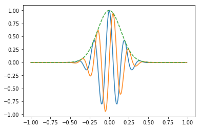
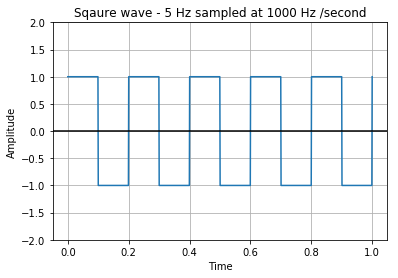
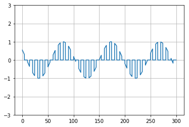

Chapter 1
Introduction to Signals
What is Signal?
A signal is an electromagnetic or electrical current that is used for carrying data from one system or network to another. The signal is a function that conveys information about a phenomenon. it refers to any time-varying voltage which carries information. It can also be defined as a physical quantity that varies with time, temperature, pressure or with any independent variables such as speech .
What is Signal processing ?
The process of operation in which the characteristics of a signal Amplitude,shape,phase,frequency,etc. undergoes a change is known as signal processing.
Continuous Time Signals
Continuous-time signals are defined along a continuum of time and are thus, represented by a continuous independent variable. Continuous-time signals are often referred to as analog signals.This type of signal shows continuity both in amplitude and time. These will have values at each instant of time. Sine and cosine functions are the best example of Continuous time signal.
Discrete Time signals
The signals which are defined or present at discrete intervals of time are known as discrete signals. Therefore, every independent variable has distinct value . They are represented as sequence of numbers. speech and video signals have the can be represented in both continuous and discrete time format under certain circumstances. but they are identical. Amplitudes also show discrete characteristics.
Advantages of Digital Signals
- Digital data can be easily compressed.
- Information in the digital form can be encrypted.
- Equipment that uses digital signals is more common and less expensive.
- Digital signal makes running instruments free from observation errors like parallax and approximation errors.
- A lot of editing tools are available
- You can edit the sound without altering the original copy
- Easy to transmit the data over networks
Disadvantage of Digital Signals
- Sampling may cause loss of information.
- A/D and D/A demands mixed-signal hardware
- Processor speed is limited
- Develop quantization and round-off errors
- It requires greater bandwidth
- Systems and processing is more complex and demand processing power .
Plotting of Information
Now we shall start with basic code to plot a given information array using basic python libraries
Python program to plot the given information
from matplotlib import pyplot as plt
from matplotlib import style
Now let us define the x and y asis parameters
x=[1,2,3,4,5]
y=[6,7,8,9,10]
plt.xlabel('x axis')
plt.ylabel('y axis')
plt.plot(x,y,label='line1')
plt.title("The signal chart intro")
plt.legend()
<matplotlib.legend.Legend at 0x1881ebfbf88>

Generation of signals
We are using numpy for generation and matplotlib for effectively plotting the signal and generating a signal of given frequency with utilization of sine function defined by numpy
from scipy import signal
import numpy as np
from matplotlib import pyplot as plt
from matplotlib import style
#Siganl sampling rate 20000Hz
t = np.linspace(0,1.0,2001)
# different parameters are fed for generation
sig_5Hz = np.sin(2*np.pi*5*t)
sig_250Hz = np.sin(2*np.pi*250*t)
# a combined signal for 2 different frequencies
sig_5Hz_250Hz = sig_5Hz + sig_250Hz
style.use('dark_background')
f,plt_arr = plt.subplots(3, sharex=True)
f.suptitle('Signal Generation')
plt_arr[0].plot(sig_5Hz,color ='yellow')
plt_arr[0].set_title('5Hz signal', color ='yellow')
plt_arr[1].plot(sig_250Hz,color ='yellow')
plt_arr[1].set_title('250Hz signal', color ='yellow')
plt_arr[2].plot(sig_5Hz_250Hz,color ='cyan')
plt_arr[2].set_title('Combined 5Hz and 250Hz signal', color ='cyan')
plt.show()

Chapter 2
Quantization and Sampling Theorem
Quantization is the process of mapping input values from a large set to output values in a smaller set with a finite number of elements or sample points . Quantization is involved to some degree in nearly all digital signal processing, as the process of representing a signal in digital form ordinarily involves rounding off to particular amount of samples . Quantization also forms the core of essentially all lossy compression algorithms.
Now let us look on generation os sine signal using python code
import numpy as np
import matplotlib.pyplot as plot
After importing matplotlib and numpy libraries let us define the signal parameters to generate sine wave
# Get x values of the sine wave
time = np.arange(0, 10, 0.1);
# Amplitude of the sine wave is sine of a variable like time
amplitude = np.sin(time)
# Plot a sine wave using time and amplitude obtained for the sine wave
plot.plot(time, amplitude)
# Matplotlib plotting
plot.title('Sine wave')
plot.xlabel('Time')
plot.ylabel('Amplitude ')
plot.grid(True, which='both')
plot.axhline(y=0, color='k')
plot.show()

Quantization of signals
The quantizing of an analog signal is done by discretizing the signal with a number of quantization levels. Quantization is representing the sampled values of the amplitude by a finite set of levels, which means converting a continuous-amplitude sample into a discrete-time signal.
Types of Quantization
There are two types of Quantization
-
Uniform Quantization The type of quantization in which the quantization levels are uniformly spaced is termed as a Uniform Quantization .
-
Non-uniform Quantization. The type of quantization in which the quantization levels are unequal and mostly the relation between them is logarithmic, is termed as a Non-uniform Quantization.
Nyquist Theorem
Let us consider a continuous time-varying signal - x(t). We record this physical signal and we obtain a digital signal with a sampling rate of fs. The original analog signal has an infinite precision, whereas the recorded signal has a finite precision. Therefore, we expect to lose information in the analog-to-digital process (ADC) .
The Nyquist sampling theorem states that under certain conditions on the analog signal and the sampling rate, it is possible not to lose any information in the process. In other words, under these conditions, we can recover the exact original continuous signal from the sampled digital signal
The signal must be bandlimited, meaning that it must not contain any frequency higher than a certain cutoff frequency B. Additionally, the sampling rate fs needs to be at least twice as large as this frequency B.
- The Nyquist rate is 2B. For a given bandlimited analog signal, it is the minimal sampling rate required to sample the signal without loss.
- The Nyquist frequency is fs/2. For a given sampling rate, it is the maximal frequency that the signal can contain in order to be sampled without loss.
import numpy as np
import matplotlib.pyplot as plt
time = 0.005;
analog_time = np.linspace (0, time, 10e5);
sampling_rate = 4000.;
sampling_period = 1. / sampling_rate;
sample_number = time / sampling_period;
sampling_time = np.linspace (0, time, sample_number);
carrier_frequency = 1000.;
amplitude = 1;
phase = 0;
quantizing_bits = 2;
quantizing_levels = 2 ** quantizing_bits / 2;
quantizing_step = 1. / quantizing_levels;
Let us define a function for sine wave generation
we know sin ( 2 x pi x fc x t + phase angle )
def analog_signal (time_point):
return amplitude * np.sin (2 * np.pi * carrier_frequency * time_point + phase);
sampling_signal = analog_signal (sampling_time);
quantizing_signal = np.round (sampling_signal / quantizing_step) * quantizing_step;
fig = plt.figure ()
plt.plot (sampling_time, sampling_signal, '+')
plt.plot (analog_time, analog_signal (analog_time) );
plt.stem (sampling_time, quantizing_signal, linefmt='r-', markerfmt='rs', basefmt='r-');
plt.title("Analog to digital signal conversion")
plt.xlabel("Time")
plt.ylabel("Amplitude")
plt.show()

We have obtained quantized signal as a result of quantization
Passive filters
Passive filters are made up of passive components such as resistors, capacitors and inductors and have no amplifying elements so have no signal gain, therefore their output level is always less than the input signal ( attenuated) . These filters will “filter-out” unwanted signals and an ideal filter will separate and pass sinusoidal input signals based upon their frequency. these passive filters are generally constructed using simple RC (Resistor-Capacitor) networks, while higher frequency filters are usually made from RLC components.
The frequency range of signals that they allow to pass through them will decide the name given to filter The most commonly used filter designs are the:
-
The Low Pass Filter – allows low frequency signals until its cut-off frequency, ƒc point to pass while blocking those any higher than that .
-
The High Pass Filter – allows high frequency signals starting from its cut-off frequency, ƒc point and higher to infinity to pass through while blocking those any lower.
-
The Band Pass Filter – allows signals falling within a certain frequency band setup between two points to pass through while blocking both the lower and higher frequencies either side of this frequency band.
Low pass RC filter

A Low Pass Filter is a circuit that can be designed to modify or reject all unwanted high frequencies of an electrical signal and accept or pass only those signals wanted by the circuits designer. A simple passive RC Low Pass Filter or LPF made by connecting together in series a single Resistor with a single Capacitor .In this type of filter arrangement the input signal ( VIN ) is applied to the series combination but the output signal ( VOUT ) is taken across the capacitor only.So to summarize, the Low Pass Filter has a constant output voltage from D.C. (0Hz), up to a specified Cut-off frequency ( ƒC ) point.By plotting the networks output voltage against different values of input frequency, the Frequency Response Curve or Bode Plot function of the low pass filter circuit can be found

This cut-off frequency point is 0.707 or -3dB.We can see from the results above, that as the frequency applied to the RC network increases , the voltage dropped across the capacitor and therefore the output voltage ( VOUT ) from the circuit decreases.
The frequency range “below” this cut-off point ƒC is generally known as the Pass Band as the input signal is allowed to pass through the filter. The frequency range “above” this cut-off point is generally known as the Stop Band as the input signal is blocked or stopped from passing through.
High pass RC filter

A High Pass Filter is the exact opposite to the low pass filter circuit as the two components have been interchanged with the filters output signal now being taken from across the resistor. The passive high pass filter circuit only passes signals above the selected cut-off point, ƒc eliminating any low frequency signals from the waveform. The reactance of the capacitor is very high at low frequencies so the capacitor acts like an open circuit and blocks any input signals at VIN until the cut-off frequency point ( ƒC ) is reached. Above this cut-off frequency point the reactance of the capacitor has reduced sufficiently as to now act more like a short circuit allowing all of the input signal to pass directly to the output as shown below in the filters response curve.The cut off frequency is calculated by fc= 1/2 x pi x R x C

We have seen that the Passive High Pass Filter is the exact opposite to the low pass filter. This filter has no output voltage from DC (0Hz), up to cut-off frequency ( ƒc ) point. This lower cut-off frequency point is 70.7% or -3dB of the voltage gain allowed to pass.
Second order filters
in Second Order Filters op-amp is used as a Voltage Controlled Voltage Source amplifier. These are another important type of active filter design because along with the active first order RC filters . Higher order filter circuits can be designed using them.
Most common filter types being:
- Butterworth
- Chebyshev
- Bessel
- Sallen-Key.
All these types of filter designs are availableas either: low pass filter, high pass filter, band pass filter and band stop (notch) filter configurations, and being second order filters, all have a 40-dB-per-decade roll-off.
The Sallen-Key filter design is one of the most widely known and popular 2nd order filter designs, requiring only a single operational amplifier for the gain control and four passive RC components to accomplish the tuning.
Program to implement High pass filter ( active - Butterworth)
import numpy as np
import pandas as pd
from scipy import signal
import matplotlib.pyplot as plt
# a function which generates sine wave required for imposing
def sine_generator(fs, sinefreq, duration):
T = duration
nsamples = fs * T
w = 2. * np.pi * sinefreq
t_sine = np.linspace(0, T, nsamples, endpoint=False)
y_sine = np.sin(w * t_sine)
result = pd.DataFrame({
'data' : y_sine} ,index=t_sine)
return result
#butterworth highpass filter function
def butter_highpass(cutoff, fs, order=5):
nyq = 0.5 * fs
normal_cutoff = cutoff / nyq
b, a = signal.butter(order, normal_cutoff, btype='high', analog=False)
return b, a
def butter_highpass_filter(data, cutoff, fs, order=5):
b, a = butter_highpass(cutoff, fs, order=order)
y = signal.filtfilt(b, a, data)
return y
fps = 30
sine_fq = 10 #Hz
duration = 10 #seconds
sine_5Hz = sine_generator(fps,sine_fq,duration)
sine_fq = 1 #Hz
duration = 10 #seconds
sine_1Hz = sine_generator(fps,sine_fq,duration)
sine = sine_5Hz + sine_1Hz
filtered_sine = butter_highpass_filter(sine.data,10,fps)
plt.figure(figsize=(20,10))
plt.subplot(211)
plt.plot(range(len(sine)),sine)
plt.title('generated signal')
plt.subplot(212)
plt.plot(range(len(filtered_sine)),filtered_sine)
plt.title('filtered signal')
plt.show()

Low pass filter ( active - butterworth)
The frequency response of the Butterworth Filter approximation function is also often referred to as “maximally flat” (no ripples) response because the pass band is designed to have a frequency response which is as flat as mathematically possible from 0Hz (DC) until the cut-off frequency at -3dB with no ripples
import numpy as np
from scipy.signal import butter, lfilter, freqz
from matplotlib import pyplot as plt
def butter_lowpass(cutoff, fs, order=5):
nyq = 0.5 * fs
normal_cutoff = cutoff / nyq
b, a = butter(order, normal_cutoff, btype='low', analog=False)
return b, a
def butter_lowpass_filter(data, cutoff, fs, order=5):
b, a = butter_lowpass(cutoff, fs, order=order)
y = lfilter(b, a, data)
return y
# Filter requirements.
order = 6
fs = 30.0 # sample rate, Hz
cutoff = 3.667 # desired cutoff frequency of the filter, Hz
# Get the filter coefficients so we can check its frequency response.
b, a = butter_lowpass(cutoff, fs, order)
# Plot the frequency response.
w, h = freqz(b, a, worN=8000)
T = 5.0 # seconds
n = int(T * fs) # total number of samples
t = np.linspace(0, T, n, endpoint=False)
data = np.sin(1.2*2*np.pi*t) + 1.5*np.cos(9*2*np.pi*t) + 0.5*np.sin(12.0*2*np.pi*t)
# Filter the data, and plot both the original and filtered signals.
y = butter_lowpass_filter(data, cutoff, fs, order)
plt.subplot(3, 1, 1)
plt.plot(0.5*fs*w/np.pi, np.abs(h), 'b')
plt.plot(cutoff, 0.5*np.sqrt(2), 'ko')
plt.axvline(cutoff, color='k')
plt.xlim(0, 0.5*fs)
plt.title("Lowpass Filter Frequency Response")
plt.xlabel('Frequency [Hz]')
plt.grid()
plt.subplot(3, 1, 2)
plt.plot(t, data, 'b-', label='data')
plt.subplot(3, 1, 3)
plt.plot(t, y, 'g-', linewidth=2, label='filtered data')
plt.xlabel('Time [sec]')
plt.subplots_adjust(hspace=1)
plt.grid()
plt.legend()
plt.show()

Chapter 3
Linear Systems and Superposition
A linear system follows the laws of superposition. This law is necessary and sufficient condition to prove the linearity of the system. Apart from this, the system is a combination of two types of laws − Mathematically a system is called linear if it possesses two properties :
- Homogeneity
- Additivity
By proving that a system has homogeneity and that activity we will verify the system is linear .The third property is known as shifts invariants.These three properties form the mathematics of how the system is used in DSP.
Homogeneous property block diagram

Here we will my multiplying the signal with constant K and it will be equivalent to multypying the same constant after the system block .A system is said to be homogeneous if an amplitude change in the input results in an identical change in the output
Additivity property block diagram
 Here we will be taking two signals and adding them before applying the transo
Here we will be taking two signals and adding them before applying the transo
linearity describes that you can describe the effects of a system by separating the input signal into simple parts and using superposition at the output to restore the overall system output. Mathematically, we say that a system with transformation Tr is linear if the following holds:
If y1(n) & y2(n) are the responses of a system when x1(n) & x2(n) are the respective inputs, then the system is linear if and only if
T [x1(n) + x2(n)] = T[x1(n)] + T[x2(n)]
= y1(n) + y2(n) (Additive property)
T[ax(n)] = a * T[x(n)] = a y(n) (Scaling or Homogeneity)
The two properties can be combined into principle of superposition stated as
T[ax1(n) + bx2(n)]= aT[x1(n)] + bT[x2(n)]
Shift Invariance
A shift invariant system is the discrete equivalent of a time-invariant system, defined such that if y(n) is the response of the system to x(n), then y(n-k) is the response of the system to x(n-k). That is, in a shift-invariant system the contemporaneous response of the output variable to a given value of the input variable does not depend on when the input occurs, time shifts are irrelevant in this regard.
import numpy as np
import matplotlib.pyplot as plot
t = np.linspace(-10, 10, 1000)
x1 = lambda t: np.sin(t)
x2 = lambda t: (t % (2*np.pi))/np.pi
def checkLinearity(Tr, titleStr):
x1plusx2 = lambda t: x1(t)+x2(t)
plt.subplot(223)
plt.plot(t, x1(t))
plt.plot(t, x2(t))
plt.plot(t, x1plusx2(t))
plt.subplot(224)
plt.plot(t, Tr(x1)(t))
plt.plot(t, Tr(x2)(t))
plt.plot(t, Tr(x1)(t)+Tr(x2)(t), 'b--', lw=5)
plt.plot(t, Tr(x1plusx2)(t))
plt.subplot(221)
plt.plot(t, x1(t))
plt.subplot(222)
plt.plot(t, x2(t))
Here We took 2 different signals , triangular and a sine wave . we will be summing them together to check the property of linearity . Clearly, this system is linear, since the
def Tr(x):
return lambda t: 2*x(t)
checkLinearity(Tr, 'y(t)=2*x(t)')

- Orange plot which is T[ax1(n) + bx2(n)]
- Blue plot which is aT[x1(n)] + bT[x2(n)]
As Both are overlaping we can conclude that the given system is linear
Now let us consider another system to test for linearity
y(t)=x(t)^3
def Tr(x):
return lambda t: x(t)**3
checkLinearity(Tr, 'y(t)=x(t)**2')

As you can see both the signals have not overlapped hence we can conclude that the signals are non linear
Signal Synthesis and Decomposition
When we are processing signals with linear systems the only method signals can be combined together is by scaling followed by addition. A signal cannot be multiplied by another signal. N signals: x0[n], x1[n], x2[n].....Xn[n] are added to form a finsal resultant signal, X[n]. This process of combining signals through scaling and addition is called Signal synthesis.
Python code for Supersposition of n Sine signals
Now let us write an illustrative python script to superpose the given sine signals and produce the resultant output
import matplotlib.pyplot as plt
from numpy import sin, linspace, nditer, zeros, pi, random, correlate
nwaves = 4
cfreq = 1500
bwidth = 5000
npt = 100
# Define min and max frequencies
freqMin = cfreq - bwidth/2
freqMax = cfreq + bwidth/2
# To create Equally spaced frequencies
freqSp = linspace(freqMin, freqMax, nwaves)
# Sample at twice highest freq to satisfy Nyquist condition
tmax = float(npt)/(2.0*freqMax)
t = linspace(0, tmax, num=npt)
phi = random.rand(nwaves)
phi *= 2*pi
sumSine = zeros(npt, dtype=float)
for (freq,phase) in zip(freqSp,phi):
sumSine += sin(2*pi*freq*t + phase)
fig = plt.figure()
fig.suptitle("Superposed Wave")
plt.plot(sumSine)
fig = plt.figure()

<Figure size 432x288 with 0 Axes>
Signal Decomposition
Decomposition is the inverse operation of synthesis, where a single signal is broken into two or more additive components. This is more involved than synthesis, because there are infinite possible decompositions for any given signa
1. Impulse Decomposition
Impulse decomposition splits N samples signal into N component signals, each having N samples. Each of the component signals contains one point from the original signal, with the other values being zero. A single nonzero point in a string of zeros is called an impulse. Impulse decomposition is important because it allows signals to be examined one sample at a time. Similarly, systems are characterized by how they respond to impulses. By knowing how a system responds to an impulse, the system's output can be calculated for any given input.
2. Step Decomposition
Step decomposition also breaks an N sample signal into N component signals, each composed of N samples. Each component signal is a step, the first samples have a value of zero while the last samples are some constant value. Consider the decomposition of an
N point signal x[n] into the components: x0[n], x1[n], x2[n], …, xN-1[n].
The kth component signal, xk[n], is composed of zeros for points 0 through k - 1,
while the remaining points have a value of: x[k] - x[k-1].
Chapter 4
Convolution
Convolution is a mathematical operation used to express the relation between input and output of an linear time invariant system. It relates input, output and impulse response of an LTI system .A convolution is an integral that expresses the amount of overlap of one function g as it is shifted over another function f. It therefore merges/convolutes one function with another.

Convolving or filtering a signal is a CPU-intensive operation. As the convolution kernel and image size increases in size, convolution becomes more and more processor intensive. Convolution in Coordinate Space is equivalent to multiplication in Frequency space. Using Fourier mathematics greatly decreases the computational CPU expense required to perform the filtering operation.we will be learning about fourier mathematics in upcoming lessons
Examples modeled as a convolution:
- Image blurring in a shaky camera
- Echoes in long distance telephone calls
- The finite bandwidth of analog sensors and electronics
The convolution operaton will be depicted as shown below
y(t)=x(t)∗h(t)
Where ,
-
y (t) = output of system
-
x (t) = input of system
-
h (t) = impulse response of system
There are two types of convolutions:
-
Continuous convolution
-
Discrete convolution
what is impulse Response?
In signal processing, the impulse response, or impulse response function (IRF), of a dynamic system is its output when presented with a brief input signal, called an impulse. More generally, an impulse response is the reaction of any dynamic system in response to some external change. In both cases, the impulse response describes the reaction of the system as a function of time (or possibly as a function of some other independent variable that parameterizes the dynamic behavior of the system).
# Sample impulse response of a system
Impulse_response = [
-0.0018225230, -0.0015879294, +0.0000000000, +0.0036977508, +0.0080754303, +0.0085302217, -0.0000000000, -0.0173976984,
-0.0341458607, -0.0333591565, +0.0000000000, +0.0676308395, +0.1522061835, +0.2229246956, +0.2504960933, +0.2229246956,
+0.1522061835, +0.0676308395, +0.0000000000, -0.0333591565, -0.0341458607, -0.0173976984, -0.0000000000, +0.0085302217,
+0.0080754303, +0.0036977508, +0.0000000000, -0.0015879294, -0.0018225230
]
What is delta function ?
The simplest impulse response is nothing more that a delta function. An impulse on the input produces an identical impulse on the output. This means that all signals are passed through the system without change. Convolving any signal with a delta function results in exactly the same signal.
If the delta function is made larger or smaller in amplitude, the resulting system is an amplifier or attenuator, respectively. In equation form,
- Amplification results if k is greater than one
- Attenuation results if k is less than one
x [n] * kδ[n] = k x[n]
Program to visualize the signals
Let us polot the input signal and the impulse respone which has been defined previously
from matplotlib import pyplot as plt
import mysignals as sigs
from matplotlib import style
style.use('ggplot')
f, plt_arr =plt.subplots(2,sharex=True)
f.suptitle("Input signal and impulse response")
plt_arr[0].plot(sigs.InputSignal_1kHz_15kHz)
plt_arr[1].plot(Impulse_response)
plt.show()

Convolution program example ( Built in function)
Here we will be implementing the Convolution of imput signal with predefined impulse response to get the desired convoluted ouput . Here the convoluted output is a low pass filter which has been designed by utilizing the proper impulse respone to filter only the low frequency signals
import mysignals as sigs
from matplotlib import pyplot as plt
from matplotlib import style
from scipy import signal
# Here we are using the convolution functon using scipy library
output_signal = signal.convolve(sigs.InputSignal_1kHz_15kHz,Impulse_response, mode='same')
style.use('ggplot')
f,plt_arr = plt.subplots(3,sharex=True)
f.suptitle("Convolution")
plt_arr[0].plot(sigs.InputSignal_1kHz_15kHz, color ='black')
plt_arr[0].set_title("Input Signal")
plt_arr[1].plot(Impulse_response, color ='orange')
plt_arr[1].set_title("Impulse Response")
plt_arr[2].plot(output_signal, color ='blue')
plt_arr[2].set_title("Output Signal")
plt.show()

As designed, only the low frequency components are filtered out from the input signal after convoluting the input with impulse response
To compute convolution ( without built in modules )
import mysignals as sigs
from matplotlib import pyplot as plt
from matplotlib import style
import csv
csvfile = "conv_output_signal.txt"
# This is the function which will calculate the convolution
def convolution(sig_src_arr,imp_response_arr,sig_dest_arr):
for x in range(len(sig_src_arr)+len(imp_response_arr)):
sig_dest_arr[x] =0
for x in range(len(sig_src_arr)):
for y in range(len(imp_response_arr)):
sig_dest_arr[x+y] = sig_dest_arr[x+y]+sig_src_arr[x]*imp_response_arr[y]
with open(csvfile,"w") as output:
writer = csv.writer(output,lineterminator =',')
for x in sig_dest_arr:
writer.writerow([x])
style.use('ggplot')
f,plt_arr =plt.subplots(3,sharex=True)
f.suptitle("Convolution")
plt_arr[0].plot(sig_src_arr)
plt_arr[0].set_title("Input Signal")
plt_arr[1].plot(imp_response_arr, color = 'brown')
plt_arr[1].set_title("Impulse Response", color ='brown')
plt_arr[2].plot(sig_dest_arr, color ='green')
plt_arr[2].set_title("Output Signal", color='green')
plt.show()
output_signal = [None]*349
convolution(sigs.InputSignal_1kHz_15kHz,Impulse_response,output_signal)

Deconvolution
Unwanted convolution is an inherent problem in transferring analog information.
Deconvolution is the process of filtering a signal to compensate for an undesired convolution. The main goal of deconvolution is to recreate the signal as it existed before the convolution took place. This usually requires the characteristics of the convolution to be known. This can be distinguished from blind deconvolution, where the characteristics of the parasitic convolution are not known. Blind deconvolution is a much more difficult problem that has no general solution, and the approach must be tailored to the particular application.
Deconvolution is nearly impossible to understand in the time domain but quite straightforward in the frequency domain. Each sinusoid that composes the original signal can be changed in amplitude and phase as it passes through the undesired convolution. To extract the original signal, the deconvolution filter must undo these amplitude and phase changes.
Python example for Deconvolution
Let us take a 1D input signal and then convolute the same with the filter defined . then to obtain back the input result we have to deconvolute the filter and the output obtained to get back the input signal
from scipy import signal
import numpy as np
sig = np.array([0,0,0,0,1,1,1,1])
filter = np.array([1,1,0])
print("\n The Input signal is\n " )
print(sig)
conv_result = signal.convolve(sig,filter)
deconv_result = signal.deconvolve(conv_result,filter)
print("\n Convolution result \n")
print(conv_result)
print("\n Deconvolution result\n ")
print(deconv_result[0])
The Input signal is
[0 0 0 0 1 1 1 1]
Convolution result
[0 0 0 0 1 2 2 2 1 0]
Deconvolution result
[0. 0. 0. 0. 1. 1. 1. 1.]
Practical example of a signal Deconvolution ( Square pulse + filter )
-
Input : a square pulse input
-
Filter: gaussian filter
output Result will be obtained , then deconvolution will be done to obtain back the input pulse
import numpy as np
import scipy.signal
import matplotlib.pyplot as plt
# Input signal be a squared signal
signal = np.repeat([0., 2., 0.], 100)
# let us convolute this by applying a gaussian filter
gauss = np.exp(-( (np.linspace(0,50)-25.)/float(12))**2 )
# calculate the convolution
filtered = np.convolve(signal, gauss, mode='same')
deconv, _ = scipy.signal.deconvolve( filtered, gauss )
#the deconvolution has n = len(signal) - len(gauss) + 1 points
n = len(signal)-len(gauss)+1
# so we need to expand it by
s = (len(signal)-n)//2
#plt.rcParams['axes.facecolor'] = 'white'
deconv_res = np.zeros(len(signal))
deconv_res[s:len(signal)-s-1] = deconv
deconv = deconv_res
# now deconv contains the deconvolution
# expanded to the original shape (filled with zeros)
fig , ax = plt.subplots(nrows=4, figsize=(6,7))
fig.tight_layout(pad=3.0)
ax[0].plot(signal)
ax[1].plot(gauss)
# we need to divide by the sum of the filter window to get the convolution normalized to 1
ax[2].plot(filtered/np.sum(gauss))
ax[3].plot(deconv)
plt.show()

Signal Corelation
Cross correlation is a standard method of estimating the degree to which two series are correlated .Here we will be corelating the given signal and comparing corelation with convolution .Correlation is a mathematical operation that is very similar to convolution. Just as with convolution, correlation uses two signals to produce a third signal. This third signal is called the cross-correlation of the two input signals.
A correlation could be under 3 possible regions
- Positive Correlation : Both variables change in the same direction.
- Neutral Correlation : No relationship in the change of the variables.
- Negative Correlation : Variables change in opposite directions.
from scipy import signal
from matplotlib import pyplot as plt
import numpy as np
import mysignals as sigs
corr_output_signal = signal.correlate(sigs.InputSignal_1kHz_15kHz, Impulse_response,mode ='same')
conv_output_signal = signal.convolve(sigs.InputSignal_1kHz_15kHz, Impulse_response,mode ='same')
fig.tight_layout(pad=3.0)
plt.rcParams['axes.facecolor'] = 'white'
plt.plot(conv_output_signal)
plt.plot(corr_output_signal)
plt.show()

Time delay calculation between two signals
Cross-correlations are useful for determining the time delay between two signals
Real world example : For determining time delays for the propagation of acoustic signals across a microphone array. After calculating the cross-correlation between the two signals, the maximum of the cross-correlation function indicates the point in time where the signals are best aligned, which basically provides the time delay between the two signals is determined by the arg max of the cross-correlation
import matplotlib.pyplot as plt
from scipy import signal
import numpy as np
def lag_finder(y1, y2, sr):
n = len(y1)
corr = signal.correlate(y2, y1, mode='same') / np.sqrt(signal.correlate(y1, y1, mode='same')[int(n/2)] * signal.correlate(y2, y2, mode='same')[int(n/2)])
delay_arr = np.linspace(-0.5*n/sr, 0.5*n/sr, n)
delay = delay_arr[np.argmax(corr)]
print('y2 is ' + str(delay) + ' behind y1')
plt.figure()
plt.plot(delay_arr, corr)
plt.title('Lag: ' + str(np.round(delay, 3)) + ' s')
plt.xlabel('Lag')
plt.ylabel('Correlation coeff')
plt.show()
sr = 2345
y = np.linspace(0, 2*np.pi, sr)
y = np.tile(np.sin(y), 5)
y += np.random.normal(0, 5, y.shape)
y1 = y[sr:4*sr]
y2 = y[:3*sr]
lag_finder(y1, y2, sr)
y2 is 1.0001421666192778 behind y1

Application :
Key elements of a radar system. Like other echo location systems, radar transmits a short pulse of energy that is reflected by objects being examined. This makes the received waveform a shifted version of the transmitted waveform, plus random noise. Detection of a known waveform in a noisy signal is the fundamental problem in echo location. Corelation solves this problem
Properties of Convolution
A linear system's characteristics are completely specified by the system's impulse response, as governed by the mathematics of convolution. This is the basis of many signal processing techniques. For example: Digital filters are created by designing an appropriate impulse response.
Identity property
If any function x(t) is convolved with impulse function δ(t), it results the function itself. Again, convolution of any function with δ (t – t0), it results the shifted function.
x(t)* δ (t) = x(t)
x(t)* δ (t – t0) = x(t – t0)
δ (t)* δ (t) = δ (t)
Commutative
The order in which two signals are convolved makes no difference and the results are identical.In any linear system, the input signal and the system's impulse response can be exchanged without changing the output signal.There can be no particular order . Even though physically it makes no difference Mathematically we can covolve them either way

Associative property
When we Convolve two of the signals to produce an intermediate signal, then convolve the intermediate signal with the third signal to obtain the final result of the system . The associative property provides that the order of the convolutions doesn't matter here and will get us the same result

The associative property is used to describe how cascaded systems function .Two or more systems are said to be in a cascade if the output of one system is used as the input for the next system. The order of the systems can be rearranged without changing the overall response of the cascade.Also any number of cascaded systems can be replaced with a single system. The impulse response of the replacement system is found by convolving the impulse responses of all of the original systems.
Distributive property
The distributive property describes the operation of parallel systems with added outputs ,This will helps in simplification of the circuits while analysing . Two or more systems can share the same input x[n] and have their outputs added to produce y[n]. The distributive property allows this combination of systems to be replaced with a single system and also having an impulse response equal to the sum of the impulse responses of the original systems.

Running sum and First dfference
Convolution can change discrete signals in similar ways that resemble integration and differentiation which we do when processing analog signals . Since the terms "derivative" and "integral" specifically refer to operations on continuous signals. The discrete operation that mimics the first derivative is called the first difference. Likewise, the discrete form of the integral is called the Running sum
The running sum is the discrete version of the integral. Each sample in the output signal is equal to the sum of all samples in the input signal to the left. Note that the impulse response extends to infinity, a rather nasty feature.
Program to illustrate running sum
from matplotlib import pyplot as plt
from matplotlib import style
import mysignals as sigs
import numpy as np
output_signal = np.cumsum(sigs.InputSignal_1kHz_15kHz)
style.use('dark_background')
f,plt_arr = plt.subplots(2,sharex=True)
f.suptitle("Running Sum")
plt_arr[0].plot(sigs.InputSignal_1kHz_15kHz,color='yellow')
plt_arr[0].set_title("Input Signal")
plt_arr[1].plot(output_signal,color ='magenta')
plt_arr[1].set_title("Output Signal")
plt.show()

Running sum program without built in function
from matplotlib import pyplot as plt
from matplotlib import style
import mysignals as sigs
# funtion which calculates running sum with foe loop
def calc_running_sum(sig_src_arr,sig_dest_arr):
for x in range(len(sig_dest_arr)):
sig_dest_arr[x] = 0
for x in range(len(sig_src_arr)):
sig_dest_arr[x] = sig_dest_arr[x-1]+sig_src_arr[x]
style.use('ggplot')
f,plt_arr = plt.subplots(2,sharex=True)
f.suptitle("Running Sum")
plt_arr[0].plot(sig_src_arr,color='red')
plt_arr[0].set_title("Input Signal")
plt_arr[1].plot(output_signal,color ='magenta')
plt_arr[1].set_title("Output Signal")
plt.show()
output_signal =[None]*320
calc_running_sum(sigs.InputSignal_1kHz_15kHz,output_signal)

First difference
This is the discrete version of the first derivative. Each sample in the output signal is equal to the difference between adjacent samples in the input signal. In other words, the output signal is the slope of the input signal.
Program to illustrate First difference
from matplotlib import pyplot as plt
from matplotlib import style
import mysignals as sigs
import numpy as np
#Here we are utilizng a built in function
output_signal = np.diff(sigs.InputSignal_1kHz_15kHz)
style.use('ggplot')
#style.use('dark_background')
f,plt_arr = plt.subplots(2,sharex=True)
f.suptitle("First Difference")
plt_arr[0].plot(sigs.InputSignal_1kHz_15kHz,color='red')
plt_arr[0].set_title("Input Signal")
plt_arr[1].plot(output_signal,color ='magenta')
plt_arr[1].set_title("Output Signal")
plt.show()

Program to calculate first difference without built in functions :
from matplotlib import pyplot as plt
from matplotlib import style
import mysignals as sigs
# Function to do the First difference operation
def calc_first_difference(sig_src_arr,sig_dest_arr):
#creation of space for storing result
for x in range(len(sig_dest_arr)):
sig_dest_arr[x] =0
#Taking the difference between the present and previous result (x-1)
for x in range(len(sig_src_arr)):
sig_dest_arr[x] = sig_src_arr[x] - sig_src_arr[x-1]
style.use('ggplot')
f,plt_arr = plt.subplots(2,sharex=True)
f.suptitle("First Difference")
plt_arr[0].plot(sig_src_arr,color='red')
plt_arr[0].set_title("Input Signal")
plt_arr[1].plot(sig_dest_arr,color ='magenta')
plt_arr[1].set_title("Output Signal")
plt.show()
#Creation of empty array to feed output
output_signal =[None]*320
# calling the function with our signal
calc_first_difference(sigs.InputSignal_1kHz_15kHz,output_signal)

Chapter 5
Discrete Fourier Transform
Introduction
Fourier transform is a function that transforms a time domain signal into frequency domain. The function accepts a time signal as input and produces the frequency representation of the signal as an output.
The transformation from xn→Xk is a translation from configuration space to frequency space and can be very useful in both exploring the power spectrum of a signal and also for transforming certain problems for more efficient computation.All signals in the real world is a time signal and is will be up of many sinusoids of different frequencies. So, time domain signal can be converted into the frequency domain to view different frequency components associated with the signal .
Fourier transform doesn’t change the properties of signal. It just provides a different view to analyze time signal because some properties and features of the signal can be fully explored in the frequency domain,But not in time domain .
The most important application of Fourier transform in context of predictive maintenance is vibration analysis which makes use of the fact that all rotating equipment vibrates to a certain degree. The incoming vibration data from the sensors is converted into the frequency domain where you can analyze the frequency of vibration and compare it to the standard baseline to see if your equipment is functioning optimally or not.
The Fourier transform deconstructs a time domain representation of a signal into the frequency domain representation. The frequency domain shows the voltages present at varying frequencies. It is a different way to look at the same signal. A digitizer samples a waveform and transforms it into discrete values. Because of this transformation, the Fourier transform will not work on this data. Instead, the discrete Fourier transform (DFT) is used, which produces as its result the frequency domain components in discrete values, or bins. The fast Fourier (FFT) is an optimized implementation of a DFT that takes less computation to perform but essentially just deconstructs a signa
--
Discrete Fourier transform
\[X[k] = \sum_{n=0}^{N-1} x[n] e^{-i 2 \pi \frac{k n}{N}}\]
- X is also length
- N and the value at index
- k is the frequency component of x at normalized frequency 2πkN radians per sample.
Each element of X is the result of multiplying the signal x by a signal with only one frequency component at the appropriate frequency, then summing the result. DFT is invertibleas well . to go from X to x simply apply the same transformation except with a positive exponential instead of the negative. This is the "Inverse Discrete Fourier Transform" (IDFT).
Basis functions of DFT?
The sine and cosine waves used in the DFT are commonly called the DFT basis functions. The output of the DFT is a set of numbers that represent amplitudes. The basis functions are a set of sine and cosine waves with unity amplitude. If you assign each amplitude (the frequency domain) to the proper sine or cosine wave (the basis functions), the result is a set of scaled sine and cosine waves that can be added to form the time domain signal.This will facilitate to split the mixed signals components into two seperate componenets .
Where have you used DFT in your daily life?
If you have seen JPEG image , listened to an MP3 song , watched an MPEG movie, used the voice recognition capabilities of Amazon's Alexa, you have used some variant of the DFT to realize the functionality. Its efficient implementation is called the the Fast Fourier Transform which is considered one of the most important algorithms in computer science.
What is the technical Use of DFT ?
To get the frequency of a sine wave we need to get its Discrete Fourier Transform(DFT). You just need to know how to use it. In its simplest terms, The DFT converts a time domain signal to a frequency domain. it takes a signal and calculates which frequencies are present in it.
Program to compute the DFT of a signal
import mysignals as sigs
from matplotlib import pyplot as plt
from matplotlib import style
import math
import numpy as np
# functon written to repeatedly do the required summation operaions
def calc_dft(sig_src_arr):
sig_dest_imx_arr = [None]*int((len(sig_src_arr)/2))
sig_dest_rex_arr = [None]*int((len(sig_src_arr)/2))
sig_dest_mag_arr = [None]*int((len(sig_src_arr)/2))
#initialize all the array elements with zero before storing
for j in range(int(len(sig_src_arr)/2)):
# Here the length becomes half of the time domain signal in frequency domain
sig_dest_rex_arr[j] =0
sig_dest_imx_arr[j] =0
for k in range(int(len(sig_src_arr)/2)):
for i in range(len(sig_src_arr)):
sig_dest_rex_arr[k] = sig_dest_rex_arr[k] + sig_src_arr[i]*math.cos(2*math.pi*k*i/len(sig_src_arr))
sig_dest_imx_arr[k] = sig_dest_imx_arr[k] - sig_src_arr[i]*math.sin(2*math.pi*k*i/len(sig_src_arr))
for x in range(int(len(sig_src_arr)/2)):
sig_dest_mag_arr[x] = math.sqrt(math.pow(sig_dest_rex_arr[x],2)+math.pow(sig_dest_imx_arr[x],2))
return sig_dest_mag_arr,sig_dest_rex_arr,sig_dest_imx_arr
# Number of samplepoints
N = 600
# sample spacing
T = 1.0 / 800.0
f1=80.0
f2=20.0
x = np.linspace(0.0, N*T, N)
# Define the signals and its frequencies
s1=np.sin(f1 * 2.0*np.pi*x)
s2=np.sin(f2 * 2.0*np.pi*x)
y = s1+s2
yf,real,img = calc_dft(y)
xf = np.linspace(0.0, 1.0/(2.0*T), N/2)
style.use('ggplot')
f,plt_arr = plt.subplots(3, sharex=True)
f.suptitle("Discrete Fourier Transform (DFT)")
plt_arr[0].plot(s2, color='blue')
plt_arr[0].set_title("Signal 1",color='blue')
plt_arr[1].plot(s1, color='green')
plt_arr[1].set_title("Signal 2",color='green')
plt_arr[2].plot(y, color='red')
plt_arr[2].set_title("Mixed Input Signal",color='red')
fig, ax = plt.subplots()
ax.plot(xf, 2.0/N * np.abs(yf[:N//2]))
ax.set_title("Fourier Transform")
plt.show()


NOTE:
Here we sucessfuly classified the given Input signal which had more than one frequency component into differenent frequency components .This method of coversion of signal in time domain to frequency domain is known as fourier transformation
import mysignals as sigs
from matplotlib import pyplot as plt
from matplotlib import style
import math
sig_dest_imx_arr = []
sig_dest_rex_arr = []
sig_dest_mag_arr = []
def plot_signals(sig_src_arr):
style.use('ggplot')
f,plt_arr = plt.subplots(5, sharex=True)
f.suptitle("Discrete Fourier Transform (DFT)")
plt_arr[0].plot(sig_src_arr, color='red')
plt_arr[0].set_title("Input Signal",color='red')
plt_arr[1].plot(sig_dest_rex_arr, color='green')
plt_arr[1].set_title("Frequency Domain(Real part)",color='green')
plt_arr[2].plot(sig_dest_imx_arr, color='green')
plt_arr[2].set_title("Frequency Domain(Imaginary part)",color='green')
plt_arr[3].plot(sig_dest_mag_arr, color='magenta')
plt_arr[3].set_title("Frequency Domain (Magnitude))",color='yellow')
plt_arr[4].plot(sig_dest_idft_arr, color='magenta')
plt_arr[4].set_title("Time Domain (Outout from Inverse DFT))",color='yellow')
plt.show()
sig_dest_idft_arr =[]
def calc_idft(sig_src_rex_arr, sig_src_imx_arr):
global sig_dest_idft_arr
sig_dest_idft_arr = [None]*(len(sig_src_rex_arr)*2)
for j in range(len(sig_src_rex_arr)*2):
sig_dest_idft_arr[j] =0
for x in range(len(sig_src_rex_arr)):
sig_src_rex_arr[x] = sig_src_rex_arr[x]/len(sig_src_rex_arr)
sig_src_imx_arr[x] = sig_src_imx_arr[x]/len(sig_src_rex_arr)
for k in range(len(sig_src_rex_arr)):
for i in range(len(sig_src_rex_arr)*2):
sig_dest_idft_arr[i] = sig_dest_idft_arr[i] + sig_src_rex_arr[k] *math.cos(2*math.pi*k*i/(len(sig_src_rex_arr)*2))
sig_dest_idft_arr[i] = sig_dest_idft_arr[i] + sig_src_imx_arr[k] *math.sin(2*math.pi*k*i/(len(sig_src_rex_arr)*2))
calc_dft(sigs.InputSignal_1kHz_15kHz)
calc_idft(sig_dest_rex_arr,sig_dest_imx_arr)
plot_signals(sigs.InputSignal_1kHz_15kHz)

Properties of the Fourier Transform
Let us see and illustrate illustrate several basic properties of the Fourier Transform .Which may be utilized extensively in day to day life . First, let us define a Python function which approximates the Fourier transform with builtin functions using the numpy library
def ft(samples, Fs, t0):
f = np.linspace(-Fs/2, Fs/2, len(samples), endpoint=False)
return np.fft.fftshift(np.fft.fft(samples)/Fs * np.exp(-2j*np.pi*f*t0))
Now let us Evaluate few of the known Fourier Transforms and compare it pusing a python program to defina afunction and then to take the faourier transform to get back the standard results
import numpy as np
from matplotlib import pyplot as plt
style.use('ggplot')
Fs = 10000 # The sampling frequency
t0 = 10 # The half time interval
t = np.arange(-t0, t0, 1/Fs) # the time samples
f = np.arange(-Fs/2, Fs/2, Fs/len(t)) # the corresponding frequency samples
g = lambda t: (abs(t) <=0.5).astype(float) # rect function
plt.subplot(211)
plt.plot(t, g(t))
plt.subplot(212)
plt.xlim(-4, 4)
plt.ylim(-4, 4)
plt.plot(f, ft(g(t), Fs, -t0).real)
plt.show()

g = lambda t: np.sin(2*np.pi*2*t) # here we have defined sin function
plt.subplot(211)
plt.plot(t, g(t))
plt.subplot(212)
plt.xlim(-5, 5)
plt.ylim(-5, 5)
plt.plot(f, ft(g(t), Fs, -t0).real, label='real')
plt.plot(f, ft(g(t), Fs, -t0).imag, label='imag')
[<matplotlib.lines.Line2D at 0x20364be6b88>]

F{x(t)} = X(f)
F{y(t)} = Y(f)
F{ax(t)}+ by(t) &= aX(f)+bY(f)
x = rect
X = ft(x(t), Fs, -tstart)
def showShift(t0):
plt.gcf().clear()
plt.subplot(121)
plt.plot(t, x(t), label='x(t)')
plt.plot(t, x(t-t0), label='x(t-t_0)')
plt.subplot(122)
Xt0 = ft(x(t-t0), Fs, -tstart)
plt.plot(f, X.real, label='Re X(f)')
plt.plot(f, Xt0.real, label='Re X_{t_0}(f)')
plt.plot(f, Xt0.imag, label='Im X_{t_0}(f)')
showShift(12)

Applications of DFT
Now let us aplly this to decode a raw ECG signal and extract meaningful data out of it and apply the concets which we have learned now
DSP has many medical applications and one among them is ECG raw signal analysis to analyze the given signal and fetch meaningful information out of them .ECG Feature Extraction plays a significant role in diagnosing most of the cardiac diseases. One cardiac cycle in an ECG signal consists of the P-QRS-T waves. This feature extraction scheme determines the amplitudes and intervals in the ECG signal for subsequent analysis. The amplitudes and intervals value of P-QRS-T segment determines the functioning of heart of every human.
How To calculate BPM from Raw ECG signal ?
When the cardiac rhythm is regular, the heart rate can be determined by the interval between two successive QRS complexes. On standard paper with the most common tracing settings, the heart rate is calculated by dividing the number of large boxes (5 mm or 0.2 seconds) between two successive QRS complexes
import csv
import math
import pandas as pd
import numpy as np
import matplotlib.pyplot as plt
import scipy.fftpack
import scipy.signal as signal
###Obtain ecg sample from csv file using pandas###
dataset = pd.read_csv("noise.csv")
y = [e for e in dataset.hart]
# Number of samplepoints
N = len(y)
# sample spacing
Fs = 1000
T = 1.0 / Fs
#Compute x-axis
x = np.linspace(0.0, N*T, N)
#Compute FFT
yf = scipy.fftpack.fft(y)
#Compute frequency x-axis
xf = np.linspace(0.0, 1.0/(2.0*T), N/2)
##Declare plots for time-domain and frequency-domain plots##
fig_td = plt.figure()
fig_td.canvas.set_window_title('Time domain signals')
fig_fd = plt.figure()
fig_fd.canvas.set_window_title('Frequency domain signals')
ax1 = fig_td.add_subplot(211)
ax1.set_title('Before filtering')
ax2 = fig_td.add_subplot(212)
ax2.set_title('After filtering')
ax3 = fig_fd.add_subplot(211)
ax3.set_title('Before filtering')
ax4 = fig_fd.add_subplot(212)
ax4.set_title('After filtering')
#Plot non-filtered inputs
ax1.plot(x,y, color='r', linewidth=0.7)
ax3.plot(xf, 2.0/N * np.abs(yf[:N//2]), color='r', linewidth=0.7, label='raw')
ax3.set_ylim([0 , 0.2])
#Compute filtering co-efficients to eliminate 50hz brum noise associated with the signal
b, a = signal.butter(4, 50/(Fs/2), 'low')
#Compute filtered signal
tempf = signal.filtfilt(b,a, y)
#b, a = signal.butter(1, band_filt/(Fs/2), 'bandstop')
tempf = signal.filtfilt(b,a, y)
yff = scipy.fftpack.fft(tempf)
### Compute Kaiser window co-effs to eliminate baseline drift noise ###
nyq_rate = Fs/ 2.0
# The desired width of the transition from pass to stop.
width = 5.0/nyq_rate
# The desired attenuation in the stop band, in dB.
ripple_db = 60.0
# Compute the order and Kaiser parameter for the FIR filter.
O, beta = signal.kaiserord(ripple_db, width)
# The cutoff frequency of the filter.
cutoff_hz = 4.0
#Use firwin with a Kaiser window to create a lowpass FIR filter and pass the signal
taps = signal.firwin(O, cutoff_hz/nyq_rate, window=('kaiser', beta), pass_zero=False)
# Use lfilter to filter x with the FIR filter.
y_filt = signal.lfilter(taps, 1.0, tempf)
yff = scipy.fftpack.fft(y_filt)
#Plot filtered outputs
ax4.plot(xf, 2.0/N * np.abs(yff[:N//2]), color='g', linewidth=0.7)
ax4.set_ylim([0 , 0.2])
ax2.plot(x,y_filt, color='g', linewidth=0.7);
#Compute Number of heart beats per minute
dataset['filt']=y_filt
#Calculate moving average with 0.75s in both directions, then append do dataset
hrw = 1 #One-sided window size, as proportion of the sampling frequency
fs = 333 #The example dataset was recorded at 300Hz
#mov_avg = pd.rolling_mean(dataset.filt, window=(int(hrw*fs))) #Calculate moving average
mov_avg = dataset.filt.rolling(int(hrw * fs)).mean()
#Impute where moving average function returns NaN, which is the beginning of the signal where x hrw
avg_hr = (np.mean(dataset.filt))
mov_avg = [avg_hr if math.isnan(x) else x for x in mov_avg]
mov_avg = [(0.5+x) for x in mov_avg]
mov_avg = [x*1.2 for x in mov_avg] #For now we raise the average by 20% to prevent the secondary heart contraction from interfering, in part 2 we will do this dynamically
dataset['filt_rollingmean'] = mov_avg #Append the moving average to the dataframe
#Mark regions of interest
window = []
peaklist = []
listpos = 0
#We use a counter to move over the different data columns
for datapoint in dataset.filt:
#Get local mean
rollingmean = dataset.filt_rollingmean[listpos]
if (datapoint < rollingmean) and (len(window) < 1): #If no detectable R-complex activity -> do nothing
listpos += 1
#If signal comes above local mean, mark ROI
elif (datapoint > rollingmean):
window.append(datapoint)
listpos += 1
#If signal drops below local mean -> determine highest point
else:
maximum = max(window)
beatposition = listpos - len(window) + (window.index(max(window))) #Notate the position of the point on the X-axis
peaklist.append(beatposition) #Add detected peak to list
window = [] #Clear marked ROI
listpos += 1
ybeat = [dataset.filt[x] for x in peaklist] #Get the y-value of all peaks for plotting purposes
fig_hr= plt.figure()
fig_hr.canvas.set_window_title('Peak detector')
ax5 = fig_hr.add_subplot(111)
ax5.set_title("Detected peaks in signal")
ax5.plot(dataset.filt, alpha=0.5, color='blue') #Plot semi-transparent HR
ax5.plot(mov_avg, color ='green') #Plot moving average
ax5.scatter(peaklist, ybeat, color='red') #Plot detected peaks
#Compute heart rate
RR_list = []
cnt = 0
while (cnt < (len(peaklist)-1)):
RR_interval = (peaklist[cnt+1] - peaklist[cnt]) #Calculate distance between beats in of samples
ms_dist = ((RR_interval / fs) * 1000.0) #Convert sample distances to ms distances
RR_list.append(ms_dist) #Append to list
cnt += 1
bpm = 60000 / np.mean(RR_list) #60000 ms (1 minute) / average R-R interval of signal
print("\n\n\nAverage Heart Beat is: %.01f\n" %(bpm)) #Round off to 1 decimal and print
print("No of peaks in sample are {0}".format(len(peaklist)))
plt.show()
Average Heart Beat is: 72.0
No of peaks in sample are 12


import numpy as np
import matplotlib.pyplot as plt
import scipy.fftpack
# Number of samplepoints
N = 600
# sample spacing
T = 1.0 / 800.0
x = np.linspace(0.0, N*T, N)
y = np.sin(50.0 * 2.0*np.pi*x) + 0.5*np.sin(80.0 * 2.0*np.pi*x)
yf = scipy.fftpack.fft(y)
fig, ax = plt.subplots()
ax.plot(xf, 2.0/N * np.abs(yf[:N//2]))
plt.show()

Chapter 6
Complex Numbers
Complex Number System
Complex numbers are an extension of the ordinary numbers which we use in mathematics . They have the unique property of representing and manipulating two variables as a single quantity together. This is really helpfull for fourier analysis , where the frequency domain is composed of two signals, the real and the imaginary parts. Complex numbers will reduce the size of equations used in DSP and enable techniques that are difficult or impossible with real numbers alone. The complex Fourier transform, the Laplace transform, and the z-transform. These complex transforms are the heart of theoretical DSP.
History of Complex numbers : - Indian mathematician Mahavira (850 A.D.) was first to mention in his work 'Ganitasara sangraha'; 'As in nature of things a negative quantity is not a square, it has, therefore, no square root'. Hence, there is no real number x which satisfies the polynomial equation
Let us consider this quadratic equation \[ax^2 + bx + c = 0 \] The rots of this equation will be given by
\[x = \dfrac{-b \pm \sqrt{b^{2} - 4ac}}{2a}\]
A Complex number is an object of the form
a+bi
where a and b are real numbers \[i^{2} = -1\]
The form a+bi , where a and b are real numbers is called the standard form for a complex number. When we have a complex number of the form z=a+bi , the number a is called the real part of the complex number z and the number b is called the imaginary part of z . Since i is not a real number, two complex numbers a+bi and c+di are equal if and only if a=c and b=d .
Some Key Points of Complex Numbers
-
As explained, complex numbers are generally expressed as z = a+ib. Hence z is: Purely real, if b = 0
-
Imaginary, if b ≠ 0
-
Purely imaginary, if a = 0
-
The set R of real numbers is a proper subset of the complex numbers.
-
Zero is purely real as well as purely imaginary but not imaginary.
-
i = √(-1), is called the imaginary unit. i2 = -1; i3 = i; i4=1, etc.
-
If j = a + ib, then a-ib is called complex conjugate of j.
It can be shown that the complex numbers satisfy many useful and familiar properties, which are similar to properties of the real numbers.
If u , w , and z , are complex numbers, then
-
w+z=z+w
-
u+(w+z)=(u+w)+z
-
The complex number 0=0+0i is an additive identity, that is z+0=z .
-
If z=a+bi , then the additive inverse of z is −z=(−a)+(−b)i . That is, z+(−z)=0 .
-
wz=zw
-
U(wz)=(Uw)z
-
U(w+z)=Uw+Uz
-
If wz=0 , then w=0 or z=0
Python code for doing complex number based operation
import cmath
import math
# Initializing real number values
x = 1.0
y = 1.0
# converting x and y into complex number
z = complex(x,y);
# converting complex number into polar using polar()
w = cmath.polar(z)
# printing modulus and argument of polar complex number
print (" polar Representation is ",end="")
print (w)
The modulus and argument of polar complex number is : (1.4142135623730951, 0.7853981633974483)
Polar Representation of Complex Numbers
The point ‘z’ represented in red is the complex number z = a+ib which corresponds to an intercept ‘a’ on the x-axis while it corresponds to an intercept ‘b’ on y-axis. Complex number does not actually mean complicated. In fact, it just implies that a complex number is a combination of a real and imaginary number. The line in blue represents the position vector of the point z.
Complex plane is also termed as the Argand plane. A complex number is actually a point or a position vector in a two dimensional Cartesian coordinate system. The real part of the complex number is graphed as the horizontal component while the imaginary part is plotted against the vertical component. When we talk of a position vector of a complex number, it always takes into consideration, the magnitude and the direction with respect to the origin. All this is also emphasized in the polar form.
Chapter 7
Complex Fourier Transform
Complex Fouier Transform
Although complex numbers are fundamentally disconnected from our reality, they can be used to solve science and engineering problems in two ways. First, the parameters from a real world problem can be substituted into a complex form, as presented in the last chapter. The second method is much more elegant and powerful, a way of making the complex numbers mathematically equivalent to the physical problem. This approach leads to the complex Fourier transform, a more sophisticated version of the real Fourier transform discussed in Chapter 8. The complex Fourier transform is important in itself, but also as a stepping stone to more powerful complex techniques, such as the Laplace and z-transforms. These complex transforms are the foundation of theoretical DSP
Complex DFT: The complex version of the transforms represent positive and negative frequencies in a single array. The complex versions are flexible that it can process both complex valued signals and real valued signals. The following figure captures the difference between real DFT and complex DFT.
Consider the case of N-point complex DFT, it takes in N samples of complex-valued time domain waveform x[n] and produces an array X[k] of length N.
\[x[K]=\frac{1}{N} \sum_{k=0}^{N-1}X[k]e^{\frac{-i2\pi kn}{N}}\]
The arrays values are interpreted as follows
- X[0] represents DC frequency component
- Next N/2 terms are positive frequency components with X[N/2] being the Nyquist frequency (which is equal to half of sampling frequency)
- Next N/2-1 terms are negative frequency components (note: negative frequency components are the phasors rotating in opposite direction, they can be optionally omitted depending on the application)
The corresponding synthesis equation (reconstruct x[n] from frequency domain samples X[k]) is
\[x[n]=\sum_{k=0}^{N-1}X[k]e^{\frac{i2\pi kn}{N}}\]
From these equations we can see that the real DFT is computed by projecting the signal on cosine and sine basis functions. However, the complex DFT projects the input signal on exponential basis functions (Euler’s formula connects these two concepts).When the input signal in the time domain is real valued, the complex DFT zero-fills the imaginary part during computation (That’s its flexibility and avoids the caveat needed for real DFT). The following figure shows how to interpret the raw FFT results in Matlab that computes complex DFT. The specifics will be discussed next with an example.

Real DFT: The real version of the transform, takes in a real numbers and gives two sets of real frequency domain points – one set representing coefficients over cosine basis function and the other set representing the co-efficient over sine basis function. Consider the case of N-point real DFT , it takes in N samples of (real-valued) time domain waveform x[n] and gives two arrays of length N/2+1 each set projected on cosine and sine functions respectively.
$x[n]=\sum_{k=0}^{N/2}\left(X_R[k]\cos\left(\frac{2\pi kn}{N}\right)-X_I[k]\sin\left(\frac{2\pi kn}{N}\right)\right)$
Converts N samples to two sets of N/2 + 1 samples (Real and imaginary). These are not really complex numbers but are the amplitudes of the basis functions (cosine and sine waves) that can be combined to make up the time domain signal. Since they are the amplitudes of cosine and sine basis functions they can be treated as the real and imaginary parts of complex numbers through substitution. One purpose of doing this is to convert them into polar form by creating N/2 + 1 size magnitude and phase vectors from the complex numbers, giving the magnitude and phase of the frequency response.
If converting to polar form, the values for RMagX and RPhaseX give the magnitude and phase from k = 0 (DC) to k = fs/2.

Chapter 8
Fast Fourier Transform
Introduction
A Fast Fourier Transform (FFT) is a method to calculate a discrete Fourier transform (DFT). This algorithm radically changed the landscape of computer science and engineering by making seemingly impossible problems possible . The algorithm is application of recursion . The Fourier Transform allows researchers and engineers to easily switch back and forth between real space and frequency space and is the core concept of many physics and engineering applications. Fast Fourier Transforms lay at the heart of many scientific disciplines the most common algorithm for FFTs today is known as the Cooley-Tukey algorithm.
The main advantage of having FFT is that through it, we can design the FIR filters. Mathematically, the FFT can be written as follows;
\[x[K] = \displaystyle\sum\limits_{n = 0}^{N-1}x[n]W_N^{nk}\]
Let us take an example to understand it better. We have considered eight points named from x0 to x7 . We will choose the even terms in one group and the odd terms in the other group and divide the problem .Data Points x0, x2, x4 and x6 have been grouped together and odd points x1, x3, x5 and x7 grouped. let us see how these breaking into further two is helping in computation efficiency.
\[x[k] = \displaystyle\sum\limits_{r = 0}^{\frac{N}{2}-1}x[2r]W_N^{2rk}+\displaystyle\sum\limits_{r = 0}^{\frac{N}{2}-1}x[2r+1]W_N^{(2r+1)k}\]
\[= \sum_{r = 0}^{\frac{N}{2}-1}x[2r]W_{N/2}^{rk}+\sum_{r = 0}^{\frac{N}{2}-1}x[2r+1]W_{N/2}^{rk}\times W_N^k\]
we took an eight-point sequence as input signal and then we split that one into two parts G[k] and H[k].
- G[k] stands for the even part
- H[k] stands for the odd part.
\[= G[k]+H[k]\times W_N^k\]
Computation Cost
Multiplying by the DFT matrix F involves O( $n^2$) operations. The fast Fourier transform scales as O(n log(n))thereby enabling a tremendous range of applications, including audio and image compression in MP3 and JPG formats, streaming video, satellite communications and the cellular network
Spectral analysis is the process of determining the frequency domain representation of a signal in time domain and most commonly employs the Fourier transform. The Discrete Fourier Transform (DFT) is used to determine the frequency content of signals and the Fast Fourier Transform (FFT) is an efficient method for calculating the DFT.
Fourier analysis is fundamentally a method:
- To express a function as a sum of periodic components.
- To recover the function from those components.
For example let us consider an audio clip
- Sampled at 44.1 kHz( 44, 100 samples per second)
- Consider For 10 seconds of audio
- The vector f will have dimension n = 4.41 × 105
- Computing the DFT using matrix multiplication involves approximately 200 billion multiplications.
- In contrast, the FFT requires approximately 6 × 106 which amounts to a speed-up factor of over 30, 000.
Thus, the FFT libraries are built in to nearly every device and operating system that performs digital signal processing.
Key Applications of FFT
Plotting of FFT of a given plain Sine signal
import numpy as np
import matplotlib.pyplot as plt
from scipy import fft
Fs = 150 # sampling rate
Ts = 1.0/Fs # sampling interval
t = np.arange(0,1,Ts) # time vector
ff = 20 # frequency of the signal
y = np.sin(2 * np.pi * ff * t)
plt.subplot(2,1,1)
plt.plot(t,y,'k-')
plt.xlabel('time')
plt.ylabel('amplitude')
plt.subplot(2,1,2)
n = len(y) # length of the signal
k = np.arange(n)
T = n/Fs
frq = k/T # two sides frequency range
Y = np.fft.fft(y)/n # fft computing and normalization
plt.plot(frq, abs(Y), 'r-')
plt.xlabel('freq (Hz)')
plt.ylabel('|Y(freq)|')
plt.show()

Noise filtering ( De-noising)
To gain familiarity with how to use and interpret the FFT, we will begin with a simple example that uses the FFT to denoise a signal. We will consider a function of time f(t):
Given a signal, which is regularly sampled over time and is “noisy”, how can the noise be reduced while minimizing the changes to the original signal. if you have noisy data, you might be able to filter some of that noise out. If it's at certain frequencies using this fast Fourier transform, so we would take our data Fourier transform kill some of the maybe high frequency terms that have noise and then inverse fast Fourier transform. So denoising data in general just data analysis is a big deal analysis of data
from pylab import *
from random import gauss
num_samples = 1000 # number of samples
# generate an ideal signal
# signal frequency in Hz
f_signal = 6
dt = 0.01 # sample timing in sec
p = 30 # 30 degrees of phase shift
a = 1 # signal amplitude
s = [a*sin((2*pi)*f_signal*k*dt) for k in range(0,num_samples)]
s_time = [k*dt for k in range(0,num_samples)]
# simulate measurement noise with help of gauss function to illustrate instrument noise
mu = 0
sigma = 2
n = [gauss(mu,sigma) for k in range(0,num_samples)]
# measured signal
s_measured = [ss+nn for ss,nn in zip(s,n)]
# take the fourier transform of the data
F = fft(s_measured)
# calculate the frequencies for each FFT sample
f = fftfreq(len(F),dt) # get sample frequency in cycles/sec (Hz)
# filter the Fourier transform
def filter_rule(x,freq):
band = 0.05
if abs(freq)>f_signal+band or abs(freq)<f_signal-band:
return 0
else:
return x
F_filtered = array([filter_rule(x,freq) for x,freq in zip(F,f)])
# reconstruct the filtered signal
s_filtered = ifft(F_filtered)
# get error
err = [abs(s1-s2) for s1,s2 in zip(s,s_filtered) ]
figure()
subplot(4,1,1)
plot(s_time,s)
ylabel('Original Signal')
xlabel('time [s]')
subplot(4,1,2)
plot(s_time,s_measured)
ylabel('Measured Signal')
xlabel('time [s]')
subplot(4,1,3)
semilogy(f,abs(F_filtered),'or')
semilogy(f,abs(F),'.')
legend(['Filtered Spectrum','Measured Spectrum',])
xlabel('frequency [Hz]')
subplot(4,1,4)
plot(s_time,s_filtered,'r')
plot(s_time,s,'b')
legend(['Filtered Signal','Original Signal'])
xlabel('time [s]')
Text(0.5, 0, 'time [s]')

Chapter 9
Digital Filter Design
Digital Filters
Design digital filters digital filters are a very important partof DSP.In fact the extraordinary performance is one of the key reasons that DSP has become so popular.Digital filter is a system that performs mathematical operations on a sampled, discrete-time signal to reduce or enhance certain aspects of that signal.
A digital filter system usually consists of an Analog-to-digital converter (ADC) to sample the input signal followed by a microprocessor and some peripheral components such as memory to store data and filter coefficients . Program Instructions running on the microprocessor implement the digital filter by performing the necessary mathematical operations on the numbers received from the ADC.

Digital filters are used for :
- Signal separation
- Signal restoration
Signal separation is needed whena signal has been contaminated with interference noise or other signals.For example imagine a device for measuring the electrical activity of the baby's heart something (ECG) while the baby is still in the womb.Rossignol will likely be corrupted by breathing and heartbeat of the mother.This Digital Filter be used to separate these signals so that they can individually be analyzed
Signal restoration is used when a signal has been distorted in some way.Sample an older recording made with poor equipment.Maybe silted to better represents the sound.These problems can be solved with both analog and digital filters .Well no such force and having large dynamic range both in amplitude of frequencies in this section weshall go deeper into that merits for both theater types.In DSP It is very common to see field test input and output signals.In the time domain.This is because signals are usually created by something that regular intervals of time.But this is not the only way something can take place.The second most common way of something is not equal intervals in space.For example imagine taking simultaneous readings from an array of strange sensors mounted at one centimeterincrements along the length of an aircraft wing.Many other domains are possible over time and space.By far the most common way you see the term time domain and dispute.Remember that in me actually referred to some polls taken over time.Or maybe a general reference to any domain that these samples are taken in every lead.If he has an impulse response Estep response and a frequency response.Each of these responses contains complete information about the filter but in different form.If one of the three is specified the other two are fakes and can be directly calculated.All three of these representations.Important because they describe how they feel to work out under different circumstances.The step response can be found by discrete integration of the impulse response the frequency responsecan be found from the impulse response by using the Fast Fourier Transform and can be displayed eitheron a linear scale or in decibels.
Applications
Filters are used to condition a time domain signal by attenuating unwanted frequency content.
-
Anti-Aliasing Filter – An anti-aliasing filter is used to remove signal content that cannot be properly digitized before Analog-to-Digital conversion.
-
Noise Removal – Filters could be used to remove unwanted high frequency noise from a signal, for example, a hiss in a musical recording.
-
Drift Removal – Drift or large offsets can be removed from a signal via a high pass filter or AC coupling.
Filter kernel
The most straightforward way to implement a digital filter is by convolving the input signal with the digital filter's impulse response. All possible linear filters can be made in this manner. When the impulse response is used in this way it is given a special name: called filter kernel.Kernel filters provide low- and high-pass filtering (smoothing and sharpening, respectively) using a kernel .We can adjust the size of the kernel using the Kernel Size control. The Average filter is simply a low-pass filter which takes the average of the surrounding signal values.
Time Domain Parameters

Step response is very crucial in time domain filters. Impulse response isn't the important parameter in time domain analysis of the signal . The answer lies in the way that the human mind understands and processes information. Step, impulse and frequency responses all contain identical information, But in differet formats. The step response is useful in time domain analysis because it matches the way humans view the information contained in the signals.

If you are given a signal of some unknown origin and asked to analyze it. we will divide the signal into regions of similar characteristics . Some of the regions may be smooth while others may have large amplitude peaks few others may be noisy. This segmentation is accomplished by identifying the points that separate the regions. This is where the step function comes in. The step function is the purest way of representing a division between two dissimilar regions. It can mark when an event starts or when an event ends. It tells you that whatever is on the left is somehow different from whatever is on the right. This is how the human mind views time domain information. The step response is important in filtering because it describes how the dividing lines are being modified by the filter.
Frequency Domain Parameters
The Fundamental purpose of filters is to allow some frequencies to pass unaltered, while completely blocking other frequencies. The passband refers to those frequencies that are passed, while the stopband contains those frequencies that are blocked. The transition band is between.
- A fast roll-off means that the transition band is very narrow.
- The division between the passband and transition band is called the cutoff frequency.
Let us now see three parameters that measure how well a filter performs in the frequency domain
- separate closely spaced frequencies properly the filter must have a fast roll-off.
- For the passband frequencies to move through the filter unaltered, there must be no passband ripple Lastly
- to adequately block the stopband frequencies, it shoud have stopband attenuation as shown in Figure
High-pass, band-pass and band-reject filters are designed by starting with a low-pass filter and then converting it into the desired response with suitable operations .There are two methods for the low-pass to high-pass conversion:
- Spectral inversion
- Spectral reversal.

Spectran Inversion
Frequency response found by adding zeros to the filter kernel ( zero padding) and taking a 64 point FFT. Two things must be done to change the low-pass filter kernel into a high-pass filter kernel. First, change the sign of each sample in the filter kernel. Second, add one to the sample at the center of symmetry. This results in the high-pass filter kernel shown in , with the frequency response shown . Spectral inversion flips the frequency response top-for-bottom, changing the passbands into stopbands, and the stopbands into passbands. It changes a filter from
- low-pass to high-pass.
- high-pass to low-pass.
- Band-pass to band-reject.
- Band-reject to band-pass.

This two step modification to the time domain results in an inverted frequency spectrum as shown . The input signal x[n] is applied to two systems in parallel. One of these systems is a low-pass filter with an impulse response given by h[n]. The other system does nothing to the signal(ALL PASS) and therefore has an impulse response that is a delta function δ[n]. The overall output, y[n], is equal to the output of the all-pass system minus the output of the low-pass system. Since the low frequency components are subtracted from the original signal, only the high frequency components appear in the output. Thus, a high-pass filter is formed.In programming this can be done as running the signal through a low-pass filter and then subtracting the filtered signal from the original. However, the entire operation can be performed in a signal stage by combining the two filter kernels.
Spectran Reversal

low-pass and high-pass filter kernels can be combined to form
- Band-pass
- Band-reject filters.
In short, adding the filter kernels produces a band-reject filter, while convolving the filter kernels produces a band-pass filter. These are based on the way cascaded and parallel systems are be combined. Multiple combination of these techniques can also be used.
Chapter 10
FIR Filters
Two classes of digital filters are Finite Impulse Response (FIR) and Infinite Impulse Response (IIR).
The term ‘Impulse Response’ refers to the appearance of the filter in the time domain. Filters typically have broad frequency responses, which correspond to short duration pulses in the time domain as shown
The series are:
-
Series x(n) - The input time history is x(0), x(1), x(2),..... to x(n). Lower case n is the total number of data points in the input time history.
-
Series a(k) - The filter is represented by the series labelled “a” for a FIR filter, and “a” and “b” for an IIR filter. Uppercase letters N and P are the number of terms in the filters respectively, which is also referred to as the filter “order” or “number of taps”. For example, the FIR filter is performed from k=0 to k=N.
-
Series y(n) - Output time history is y(0), y(1), y(2), …
FIR filter design involves four steps:
- STEP 1 : Determining specifications
First, we need to determine what specifications are required. This step completely depends on the application. In the example of X Hertz noise on the output of the sensor, we need to know how strong the noise component is relative to the desired signal and how much we need to suppress the noise. This information is necessary to find the filter with minimum order for this application.So this step entirely depends upon the required application.
- STEP 2 : Finding a transfer function With design specifications known, we need to find a transfer function which will provide the required filtering. The rational transfer function of a digital filter .This step calculates the coefficients,ak and bk.
\[H(z)=\frac{\sum_{k=0}^{M-1}b_{k}z^{-k}}{\sum_{k=0}^{N-1}a_{k}z^{-k}}\]
- STEP 3 : Choosing a realization structure
H(z) is known, we should choose the realization structure. In other words, there are many systems which can give the obtained transfer function and we must choose the appropriate one. For example, any of the direct form I, II, cascade, parallel, transposed, or lattice forms can be used to realize a particular transfer function. The main difference between the aforementioned realization structures is their sensitivity to using a finite length of bits. Note that in the final digital system, we will use a finite length of bits to represent a signal or a filter coefficient. Some realizations, such as direct forms, are very sensitive to quantization of the coefficients. However, cascade and parallel structures show smaller sensitivity and are preferred.
- STEP 4 : Implementing the filter
After deciding on what realization structure to use, we should implement the filter. You have a couple of options for this step: a software implementation (such as a MATLAB , C ,Python Programming) or a hardware implementation (such as a DSP, a microcontroller like ESP32 ).
Moving average filter
The moving average filter is a simple Low Pass FIR (Finite Impulse Response) filter commonly used for smoothing an array of sampled data/signal.It is the most common filter in DSP, mainly because it is the easiest digital filter to understand and use. In spite of its simplicity, the moving average filter is optimal for a common task: It takes L samples of input at a time and takes the average of those L-samples and produces a single output point. It is a very simple LPF (Low Pass Filter) structure that comes handy for scientists and engineers to filter unwanted noisy component from the intended data.
As the filter length increases (the parameter L) the smoothness of the output increases, whereas the sharp transitions in the data are made increasingly blunt. This implies that this filter has excellent time domain response but a poor frequency response.
- Reducing random noise while retaining a sharp step response. This makes it the premier filter for time domain encoded signals.
- The moving average is the worst filter for frequency domain encoded signals, with little ability to separate one band of frequencies from another.
Relatives of the Moving average filter include the
- Gaussian
- Blackman
- Multiplepass moving average.
These have slightly better performance in the frequency domain, at the expense of increased computation time
from matplotlib import pyplot as plt
import mysignals as sigs
from scipy import signal
from matplotlib import style
import numpy as np
t = np.linspace(0,1.0,2001)
sig_5hz = np.sin(2*np.pi*5*t)
sig_250hz = np.sin(2*np.pi*250*t)
sig_5hz_250hz = sig_5hz + sig_250hz
b,a = signal.butter(8,0.125)
filtered_signal = signal.filtfilt(b,a,sig_5hz_250hz, padlen=150)
style.use('dark_background')
f, plt_arr =plt.subplots(4,sharex=True)
f.suptitle('Filtfilt Filter')
plt_arr[0].plot(sig_5hz,color='red')
plt_arr[0].set_title("5Hz Signal", color ='red')
plt_arr[1].plot(sig_250hz,color='red')
plt_arr[1].set_title(" 250Hz Signal", color ='red')
plt_arr[2].plot(sig_5hz_250hz,color='yellow')
plt_arr[2].set_title("Combined 5hz and 250hz signal", color ='yellow')
plt_arr[3].plot(filtered_signal,color='magenta')
plt_arr[3].set_title("Filtered Signal", color ='magenta')
plt.show()

All types of FIR filter realizations for a given signal
from __future__ import division, print_function
import numpy as np
from scipy import signal
import matplotlib.pyplot as plt
# A common Function which has been written to plot the output of each filter
def plot_response(fs, w, h, title):
plt.figure()
plt.plot(0.5*fs*w/np.pi, 20*np.log10(np.abs(h)))
plt.ylim(-40, 5)
plt.xlim(0, 0.5*fs)
plt.grid(True)
plt.xlabel('Frequency (Hz)')
plt.ylabel('Gain (dB)')
plt.title(title)
# Low-pass filter design parameters
fs = 22050.0 # Sample rate, Hz
cutoff = 8000.0 # Desired cutoff frequency, Hz
trans_width = 250 # Width of transition from pass band to stop band, Hz
numtaps = 125 # Size of the FIR filter.
taps = signal.remez(numtaps, [0, cutoff, cutoff + trans_width, 0.5*fs],[1, 0], Hz=fs)
w, h = signal.freqz(taps, [1], worN=2000)
plot_response(fs, w, h, "Low-pass Filter")
# High-pass filter design parameters
fs = 22050.0 # Sample rate, Hz
cutoff = 2000.0 # Desired cutoff frequency, Hz
trans_width = 250 # Width of transition from pass band to stop band, Hz
numtaps = 125 # Size of the FIR filter.
taps = signal.remez(numtaps, [0, cutoff - trans_width, cutoff, 0.5*fs],[0, 1], Hz=fs)
w, h = signal.freqz(taps, [1], worN=2000)
plot_response(fs, w, h, "High-pass Filter")
# Band-pass filter design parameters
fs = 22050.0 # Sample rate, Hz
band = [2000, 5000] # Desired pass band, Hz
trans_width = 260 # Width of transition from pass band to stop band, Hz
numtaps = 125 # Size of the FIR filter.
edges = [0, band[0] - trans_width,band[0], band[1],band[1] + trans_width, 0.5*fs]
taps = signal.remez(numtaps, edges, [0, 1, 0], Hz=fs)
w, h = signal.freqz(taps, [1], worN=2000)
plot_response(fs, w, h, "Band-pass Filter")
# Band-stop filter design parameters
fs = 22050.0 # Sample rate, Hz
band = [6000, 8000] # Desired stop band, Hz
trans_width = 200 # Width of transition from pass band to stop band, Hz
numtaps = 175 # Size of the FIR filter.
edges = [0, band[0] - trans_width,band[0], band[1],band[1] + trans_width, 0.5*fs]
taps = signal.remez(numtaps, edges, [1, 0, 1], Hz=fs)
w, h = signal.freqz(taps, [1], worN=2000)
plot_response(fs, w, h, "Band-stop Filter")
plt.show()


Median filter
The Median Filter is a non-linear digital filtering technique, often used to remove noise from an image or signal. Such noise reduction is a typical pre-processing step to improve the results of later processing. Median filtering is very widely used in digital image processing because, under certain conditions, it preserves edges while removing noise , also having applications in signal processing.
The main idea of the median filter is to run through the signal entry by entry, replacing each entry with the median of neighboring entries. The pattern of neighbors is called the "window", which slides, entry by entry, over the entire signal. For 1D signals, the most obvious window is just the first few preceding and following entries, whereas for 2D or higher-dimensional data the window must include all entries within a given radius or predefined region
from matplotlib import pyplot as plt
import mysignals as sigs
from scipy import signal
from matplotlib import style
#This is a built in function which provide the filtered output
median_filter_output = signal.medfilt(sigs.InputSignal_1kHz_15kHz,11)
style.use('dark_background')
f, plt_arr =plt.subplots(2,sharex=True)
f.suptitle('Median Filter')
plt_arr[0].plot(sigs.InputSignal_1kHz_15kHz,color='red')
plt_arr[0].set_title("Input Signal", color ='red')
plt_arr[1].plot(median_filter_output,color='cyan')
plt_arr[1].set_title("Output Signal", color ='cyan')
plt.show()

Chapter 11
IIR Filters
Introduction
These are the most efficient type of filter to implement in DSP are usually provided as "biquad" filters.The amount of processing that is required to compute a biquad is relatively small. This is what enables the low-cost miniDSP products to implement a full active crossover on all input and output channels. The processor on each board can compute a certain number of biquads and this is the primary thing which indicates how many filters are available .Digital filters with an Infinite-duration Impulse Response (IIR) have characteristics that make them useful in many applications.
The feedback which is necessary in an implementation hence Infinite Impulse Response (IIR) filter is also called a recursive filter and also called as autoregressive moving-average filter (ARMA).The IIR filter has a rational transfer function. The transfer function being a ratio of polynomials means it has finite poles as well as zeros and the frequency-domain design problem becomes a rational-function approximation problem in contrast to the polynomial approximation for the FIR filte
IIR Filter Basics
IIR filters are one of two primary types of digital filters used in Digital Signal Processing (DSP) applications . “IIR” means “Infinite Impulse Response.”In IIR filter , we have recursion. We not only have the past inputs a weighted combination of those but we also have a weighted combination of the past outputs and this is where one gets the infinite nature of the impulse response because these recursions where present value of y depends on past. Sizable It will last in theory forever terms of the impulse response. The impulse response is “infinite” because there is feedback in the filter. if you put in an impulse ie. a single “1” sample followed by many “0” samples, an infinite number of non-zero values will come out. IIR filters can achieve a given filtering characteristic using less memory and calculations than a similar FIR filter.
Design Process and conditions for (IIR) filter
The filter design process:-
-
STEP 1 : Specifications and requirements of the desirable IIR filter. A type of reference analog prototype filter to be used is specified according to the specifications and after that everything is ready for analog prototype filter design.
-
STEP 2 : Scaling of the frequency range of analog prototype filter into desirable frequency range. This is how an analog prototype filter is converted into an analog filter.After the analog filter is designed
-
STEP 3 : Conversion from analog to digital filter. The most popular and most commonly used converting method is bilinear transformation method. The resulting filter, obtained in this way, is always stable. However, instability of the resulting filter, when bilinear transformation is used, may be caused only by the finite word-length side-effect.
Some design Conditions for good filter design
- The transfer function (H(z)) should be a rational function of z, and the coefficients of z should be real.
- The poles (values, where the denominator turns 0 / output is infinite) should lie inside the unit circle of the z-plane.
- The number of zeros should be less than or equal to the number of poles.
- For the effective conversion from an analog filter to a digital one, the imaginary axis of the s-plane should map into the unit circle of the z-plane. This establishes a direct relationship between the analog frequency and digital frequency in two domains.
- The left half of the s-plane should map into the inside of the unit circle of the z-plane.
Advantages of an IIR filter
- IIR filters are more versatile.
- They are computationally easier to implement.
- They are cheaper too.
- The infinite response of the IIR filter is a cool feature when you are looking for amplification of signals. Not so much when you wish to attenuate them, though.
Disadvantages of an IIR filter
-
Practically realizable digital IIR filters do not have a linear phase response. The linear phase is a property where the phase response of a filter is a linear function of the frequency.
-
IIR filters cannot implement integer math, which is an easy to use mathematical representation because it’s cheap, fast, and easy to implement
-
They are more susceptible to problems of finite-length arithmetic, such as noise generated by calculations, and limit cycles.
-
when the output isn’t computed perfectly and is fed back, the imperfection can compound.
-
They are harder (slower) to implement using fixed-point arithmetic.
-
They don’t offer the computational advantages of FIR filters for multirate (decimation and interpolation) applications.
Attributes of the different IIR filter methods:
-
Butterworth – Flat response in both the pass and stop band, but has a wide transition zone. First described by British physicist Stephen Butterworth in 1930.
-
Inverse Chebyshev – Flat in the pass band, with a narrower transition width than the Butterworth filter, but has ripple in the stop band. If ripple in the stop band is not a problem, might be preferred for a given application over the Butterworth filter.
-
Chebyshev – Can have ripple in pass band, but has steeper rolloff than Inverse Chebyshev.
-
Cauer – Narrowest transition zone. Ripple in both stop and pass bands. Sometimes called an Elliptic filter.
-
Bessel – Sloping amplitude in both the pass and stop band, with a very wide transition zone. The delay versus frequency in the filter is the flattest in this list. The Bessel filter was named for Freidrich Bessel (1784-1846), a German mathematician
IIR filter example code to find the frequency response (Chebyshev)
We are going to compute the frequency response of a type 1 chebyshev filter. Let us start by importing the signals module from scipy and also matplotlib for plotting . So I'm going to import from scipy.signal . functions used in this are the freqs, iirfilter. So in order to get a filter coefficient, we need to create filter and we're going to use this function.The first argument is the number of tabs for the filter. We can't afford the iir filter function argument is the
the pass band and stop band or the cutoff frequency by default should be selected. The IIR filter function gives a bandpass filter. So the critical frequency takes two frequencies as argument so we can pass one to 10 Hertz here as the critical frequency meaning frequencies between 1 to 10 has we want to pass through want to attenuate a everything else . Third parameter is the amount of ripples We want in the pass band. This fourth parameter is the amount of attenuation required.
from scipy.signal import freqs, iirfilter
from matplotlib import pyplot as plt
import numpy as np
#band pass filter design of cheby1
b,a = iirfilter(4,[1,10],1,60, analog =True,ftype='cheby1')
w,h= freqs(b,a, worN=np.logspace(-1,2,1000))
plt.semilogx(w,abs(h))
plt.xlabel('Frequency')
plt.ylabel('Amplitude Response')
plt.grid()
plt.show()

from scipy import signal
from matplotlib import pyplot as plt
from matplotlib import style
import numpy as np
#low pass filter design parameters ( until 100hz)
b,a = signal.cheby1(4,5,100,'low',analog=True)
w,h = signal.freqs(b,a)
#style.use('dark_background')
plt.plot(w,20*np.log10(abs(h)))
plt.xscale('log')
plt.title("Chebyshev Type I frequency response (rp=5)")
plt.xlabel("Frequency (rad/second)")
plt.ylabel("Amplitude (dB)")
plt.margins(0,0.1)
plt.grid(which='both', axis='both')
plt.axvline(100,color='green')
plt.axhline(-5,color='green')
plt.show()

from scipy import signal
from matplotlib import pyplot as plt
import numpy as np
b,a= signal.butter(4,100,'low',analog=True)
w,h = signal.freqs(b,a)
plt.plot(w,20*np.log10(abs(h)))
plt.xscale('log')
plt.title('Butterworth filter frequencry response')
plt.xlabel('Frequency (rads/second)')
plt.ylabel('Amplitude (db)')
plt.margins(0,0.2)
plt.grid()
plt.axvline(100,color='green')
plt.show()

from scipy import signal
from matplotlib import pyplot as plt
import numpy as np
b = signal.firwin(80,0.5, window=('kaiser',8))
w,h =signal.freqz(b)
plt.semilogy(w,np.abs(h),'g')
plt.ylabel('Amplitude (db)',color='b')
plt.xlabel('Freuency (rad/sample)')
plt.show()

ButerWorth Filter
Butterworth filter which we are implementing using IIR technique. So here I will be importing the Sci-Fi library and numpy which is also Implement that so here I have defined two different functions called butter_bandpass which gives the filter co-efficients . butter_bandpass_filter where I will be passing the necessary arguments for my required design. The first function would provide me the filter coefficients required and it would return the numerator and the denominator of the design filter. Once I get those values then I would be using the butter band pass filter to do the same. So now let us define various parameters associated with the word filter. I will be taking the frequency as 5000 Hertz and lower cutoff frequency of 500 an upper cut off frequency of thousand two hundred and fifty so Whatever frequency signals which are in between those two would be passed and everything else should be rejected. So to depict the frequency responses of various orders, I would be using 3 5 6 9. to show graphicaaly how does order matter for frequency response of a signal
we'll take four different signals and mix it together to form of final signal then we'll be passing that particular signal into our filter such that we would be In a position to filter out the only the necessary signals once we are done with it would be plotting the final results as you can see in the output now. We have a noisy signal donated by the blue arrow Mark and a filtered signal of a 600 kilo Hertz. So when I pass this particular mix it signal through this band pass filter, it has filtered out the required elements of the signal which is the frequency lying between 2250 and 600.
from scipy.signal import butter, lfilter, freqz
import numpy as np
from matplotlib import pyplot as plt
from matplotlib import style
# This function will return the numerator and denominator of the designed filter(b/a)
def butter_bandpass(lowcut, highcut, fs, order =5):
nyq = 0.5*fs
low = lowcut/nyq
high = highcut/nyq
b,a = butter(order,[low,high],btype='band')
return b,a
def butter_bandpass_filter(data, lowcut,highcut, fs ,order=5):
b, a = butter_bandpass(lowcut,highcut,fs, order=order)
y = lfilter(b,a,data)
return y
# now let us define the various parameters associated with butterworth filter
fs = 5000
#lower cut off frquencay
lowcut =500
#Upper cut off frequency
highcut =1250
plt.figure(1)
for order in [3,5,6,9]:
b,a = butter_bandpass(lowcut,highcut,fs, order =order)
w,h = freqz(b,a,worN=2000)
plt.plot((fs*0.5/np.pi)*w, abs(h),label ='order=%d'%order )
plt.xlabel('Frequency (Hz)')
plt.ylabel('Gain')
plt.grid()
plt.legend(loc='best')
#Test Filter
T =0.05
nsamples = T*fs
t = np.linspace(0,T,nsamples)
a = 0.02
f0 = 600
x1 = 0.1*np.sin(2*np.pi*1.2*np.sqrt(t))
x2 = 0.01*np.cos(2*np.pi*312*t+0.1)
x3 = a*np.cos(2*np.pi*f0*t+.11)
x4 = 0.03*np.cos(2*np.pi*2000*t)
x = x1+x2+x3+x4
plt.figure(2)
plt.plot(t,x, label='Noisy signal')
y = butter_bandpass_filter(x,lowcut,highcut,fs,order=6)
plt.plot(t,y,label ='Filtered signal(%g Hz)'% f0)
plt.xlabel('time (seconds)')
plt.hlines([-a,a],0,T,linestyles='--')
plt.grid()
plt.axis('tight')
plt.legend(loc='upper left')
plt.show()


Chapter 12
Windowed Filters
Windowed functions
A window function is a mathematical function that applies a weighting to each discrete time series sample in a finite set. It should be noted that window functions can be applied in the frequency-domain, though this is a somewhat convoluted process and beyond the scope of this article. As a simple example, assume the finite set x of length N. If each value within x is assigned a weighting of 1 then it can be said that a new set y has been created to which the rectangular window function w (also of length N) has been applied:
\[y(n) = x(n) . w(n)\qquad0 \leq n \leq N\]
The above equation essentially states that a new set should be created whereby each value at index n is the product of the values at the nth index of the sample set x and window function w. Figure 1 depicts both an unmodified sine wave and a sine wave to which a rectangular window has been applied – they are analogous to each othe
Windowed-sinc filters are used to separate one band of frequencies from another. They are very stable and can be pushed to incredible performance levels. These exceptional frequency domain characteristics are obtained at the expense of poor performance in the time domain including excessive ripple and overshoot in the step response. When carried out by standard convolution, windowed-sinc filters are easy to program, but slow to execute.
Types of Windowed Functions
from scipy import signal
from matplotlib import pyplot as plt
from matplotlib import style
from scipy.fftpack import fft, fftshift
import numpy as np
window = signal.barthann(51)
plt.plot(window)
plt.title("Barlett-Hann Window")
plt.ylabel("Amplitude")
plt.xlabel("Sample")
plt.figure()
A = fft(window,2048)/(len(window)/2.0)
freq = np.linspace(-0.5,0.5,len(A))
response = 20*np.log10(np.abs(fftshift(A/abs(A).max())))
plt.plot(freq,response)
plt.axis([-0.5,0.5,-120,0])
plt.title("Frequency response of the Bartlett-Hann Window")
plt.ylabel("Normalized magnitude(dB)")
plt.xlabel("Normalized frequency in (cycles/sample)")
plt.show()


## varrlet Window
from scipy import signal
from matplotlib import pyplot as plt
from matplotlib import style
from scipy.fftpack import fft, fftshift
import numpy as np
window = signal.bartlett(51)
plt.plot(window)
plt.title("Barlett Window")
plt.ylabel("Amplitude")
plt.xlabel("Sample")
plt.figure()
A = fft(window,2048)/(len(window)/2.0)
freq = np.linspace(-0.5,0.5,len(A))
response = 20*np.log10(np.abs(fftshift(A/abs(A).max())))
plt.plot(freq,response)
plt.axis([-0.5,0.5,-120,0])
plt.title("Frequency response of the Bartlett Window")
plt.ylabel("Normalized magnitude(dB)")
plt.xlabel("Normalized frequency in (cycles/sample)")
plt.show()


from scipy import signal
from matplotlib import pyplot as plt
from matplotlib import style
from scipy.fftpack import fft, fftshift
import numpy as np
window = signal.blackman(51)
plt.plot(window)
plt.title("Blackman Window")
plt.ylabel("Amplitude")
plt.xlabel("Sample")
plt.figure()
A = fft(window,2048)/(len(window)/2.0)
freq = np.linspace(-0.5,0.5,len(A))
response = 20*np.log(np.abs(fftshift(A/abs(A).max())))
plt.plot(freq,response)
plt.axis([-0.5,0.5,-120,0])
plt.title("Frequency response of the Blackman Window")
plt.ylabel("Normalized magnitude(dB)")
plt.xlabel("Normalized frequency in (cycles/sample)")
plt.show()
c:\program files\python37\lib\site-packages\ipykernel_launcher.py:18: RuntimeWarning: divide by zero encountered in log


from scipy import signal
from matplotlib import pyplot as plt
from matplotlib import style
from scipy.fftpack import fft, fftshift
import numpy as np
window = signal.bohman(51)
plt.plot(window)
plt.title("Bohman Window")
plt.ylabel("Amplitude")
plt.xlabel("Sample")
plt.figure()
A = fft(window,2048)/(len(window)/2.0)
freq = np.linspace(-0.5,0.5,len(A))
response = 20*np.log10(np.abs(fftshift(A/abs(A).max())))
plt.plot(freq,response)
plt.axis([-0.5,0.5,-120,0])
plt.title("Frequency response of the Bohman Window")
plt.ylabel("Normalized magnitude(dB)")
plt.xlabel("Normalized frequency in (cycles/sample)")
plt.show()


## Get Window
from matplotlib import pyplot as plt
import mysignals as sigs
from scipy import signal
from matplotlib import style
import numpy as np
triang_window = signal.get_window('triang',30)
kaiser_window = signal.get_window(('kaiser',4.0),30)
kaiser_window2 = signal.get_window(4.0,30)
hamm_window = signal.get_window('hamming',30)
black_window = signal.get_window('blackman',30)
style.use('dark_background')
f, plt_arr =plt.subplots(4,sharex=True)
f.suptitle('Windows')
plt_arr[0].plot(triang_window,color='red')
plt_arr[0].set_title("Triangular Window ", color ='red')
plt_arr[1].plot(kaiser_window,color='red')
plt_arr[1].set_title(" Kaiser Window ", color ='red')
plt_arr[2].plot(hamm_window,color='red')
plt_arr[2].set_title("Hamming Window ", color ='red')
plt_arr[3].plot(black_window,color='red')
plt_arr[3].set_title(" Blackman Window", color ='red')
plt.show()

Bohman window
A Bohman window is the convolution of two half-duration cosine lobes. In the time domain, it is the product of a triangular window and a single cycle of a cosine with a term added to set the first derivative to zero at the boundary. Bohman windows fall off as 1/w4.
#Python Script for Bohman window
from scipy import signal
from matplotlib import pyplot as plt
from matplotlib import style
from scipy.fftpack import fft, fftshift
import numpy as np
window = signal.bohman(51)
plt.plot(window)
plt.title("Bohman Window")
plt.ylabel("Amplitude")
plt.xlabel("Sample")
plt.figure()
A = fft(window,2048)/(len(window)/2.0)
freq = np.linspace(-0.5,0.5,len(A))
response = 20*np.log10(np.abs(fftshift(A/abs(A).max())))
plt.plot(freq,response)
plt.axis([-0.5,0.5,-120,0])
plt.title("Frequency response of the Bohman Window")
plt.ylabel("Normalized magnitude(dB)")
plt.xlabel("Normalized frequency in (cycles/sample)")
plt.show()


Box car window
In mathematics, a boxcar function is any function which is zero over the entire real line except for a single interval where it is equal to a constant, The boxcar function can be expressed in terms of the uniform distribution . As with most such discontinuous functions, there is a question of the value at the transition points. These values are probably best chosen for each individual application.When a boxcar function is selected as the impulse response of a filter, the result is a moving average filter.The function is named after its resemblance to a boxcar, a type of railroad car.
from scipy import signal
from matplotlib import pyplot as plt
from matplotlib import style
from scipy.fftpack import fft, fftshift
import numpy as np
window = signal.boxcar(51)
plt.plot(window)
plt.title("Boxcar Window")
plt.ylabel("Amplitude")
plt.xlabel("Sample")
plt.figure()
A = fft(window,2048)/(len(window)/2.0)
freq = np.linspace(-0.5,0.5,len(A))
response = 20*np.log10(np.abs(fftshift(A/abs(A).max())))
plt.plot(freq,response)
plt.axis([-0.5,0.5,-120,0])
plt.title("Frequency response of the Boxcar Window")
plt.ylabel("Normalized magnitude(dB)")
plt.xlabel("Normalized frequency in (cycles/sample)")
plt.show()


Chebby window
from scipy import signal
from matplotlib import pyplot as plt
from matplotlib import style
from scipy.fftpack import fft, fftshift
import numpy as np
window = signal.chebwin(51,at=100)
plt.plot(window)
plt.title("Chebwin Window")
plt.ylabel("Amplitude")
plt.xlabel("Sample")
plt.figure()
A = fft(window,2048)/(len(window)/2.0)
freq = np.linspace(-0.5,0.5,len(A))
response = 20*np.log10(np.abs(fftshift(A/abs(A).max())))
plt.plot(freq,response)
plt.axis([-0.5,0.5,-120,0])
plt.title("Frequency response of the Chebwin Window")
plt.ylabel("Normalized magnitude(dB)")
plt.xlabel("Normalized frequency in (cycles/sample)")
plt.show()


from scipy import signal
from matplotlib import pyplot as plt
from matplotlib import style
from scipy.fftpack import fft, fftshift
import numpy as np
window = signal.cosine(51)
plt.plot(window)
plt.title("Cosine Window")
plt.ylabel("Amplitude")
plt.xlabel("Sample")
plt.figure()
A = fft(window,2048)/(len(window)/2.0)
freq = np.linspace(-0.5,0.5,len(A))
response = 20*np.log10(np.abs(fftshift(A/abs(A).max())))
plt.plot(freq,response)
plt.axis([-0.5,0.5,-120,0])
plt.title("Frequency response of the Cosine Window")
plt.ylabel("Normalized magnitude(dB)")
plt.xlabel("Normalized frequency in (cycles/sample)")
plt.show()


hamming Window
from scipy import signal
from matplotlib import pyplot as plt
from matplotlib import style
from scipy.fftpack import fft, fftshift
import numpy as np
window = signal.hamming(51)
plt.plot(window)
plt.title("Hamming Window")
plt.ylabel("Amplitude")
plt.xlabel("Sample")
plt.figure()
A = fft(window,2048)/(len(window)/2.0)
freq = np.linspace(-0.5,0.5,len(A))
response = 20*np.log10(np.abs(fftshift(A/abs(A).max())))
plt.plot(freq,response)
plt.axis([-0.5,0.5,-120,0])
plt.title("Frequency response of the Hamming Window")
plt.ylabel("Normalized magnitude(dB)")
plt.xlabel("Normalized frequency in (cycles/sample)")
plt.show()


Hanning Window
from scipy import signal
from matplotlib import pyplot as plt
from matplotlib import style
from scipy.fftpack import fft, fftshift
import numpy as np
window = signal.hann(51)
plt.plot(window)
plt.title("Hann Window")
plt.ylabel("Amplitude")
plt.xlabel("Sample")
plt.figure()
A = fft(window,2048)/(len(window)/2.0)
freq = np.linspace(-0.5,0.5,len(A))
response = 20*np.log(np.abs(fftshift(A/abs(A).max())))
plt.plot(freq,response)
plt.axis([-0.5,0.5,-120,0])
plt.title("Frequency response of the Hann Window")
plt.ylabel("Normalized magnitude(dB)")
plt.xlabel("Normalized frequency in (cycles/sample)")
plt.show()
c:\program files\python37\lib\site-packages\ipykernel_launcher.py:18: RuntimeWarning: divide by zero encountered in log


# Kaiser window
from scipy import signal
from matplotlib import pyplot as plt
from matplotlib import style
from scipy.fftpack import fft, fftshift
import numpy as np
window = signal.kaiser(51,beta=30)
plt.plot(window)
plt.title("Kaiser Window")
plt.ylabel("Amplitude")
plt.xlabel("Sample")
plt.figure()
A = fft(window,2048)/(len(window)/2.0)
freq = np.linspace(-0.5,0.5,len(A))
response = 20*np.log10(np.abs(fftshift(A/abs(A).max())))
plt.plot(freq,response)
plt.axis([-0.5,0.5,-120,0])
plt.title("Frequency response of the Kaiser Window")
plt.ylabel("Normalized magnitude(dB)")
plt.xlabel("Normalized frequency in (cycles/sample)")
plt.show()


# Nutall window
from scipy import signal
from matplotlib import pyplot as plt
from matplotlib import style
from scipy.fftpack import fft, fftshift
import numpy as np
window = signal.nuttall(51)
plt.plot(window)
plt.title("Nuttal Window")
plt.ylabel("Amplitude")
plt.xlabel("Sample")
plt.figure()
A = fft(window,2048)/(len(window)/2.0)
freq = np.linspace(-0.5,0.5,len(A))
response = 20*np.log10(np.abs(fftshift(A/abs(A).max())))
plt.plot(freq,response)
plt.axis([-0.5,0.5,-120,0])
plt.title("Frequency response of the Nuttal Window")
plt.ylabel("Normalized magnitude(dB)")
plt.xlabel("Normalized frequency in (cycles/sample)")
plt.show()


Chapter 13
Custom Filters
Most filters have one of the four standard frequency responses: low-pass, high-pass, band-pass or band-reject. This new module will provide a general method of designing digital filters with an arbitrary frequency responsew which are tailored to the needs of your particular application. DSP excels in this area, solving problems that are far above the capabilities of analog electronics.
DETRENDING
Detrending is removing a trend from a time series; a trend usually refers to a change in the mean over time. When you detrend data, you remove an aspect from the data that you think is causing some kind of distortion. For example, you might detrend data that shows an overall increase, in order to see subtrends. Usually, these subtrends are seen as fluctuations on a time series graph.

Mathematically, FFT extracts the components of a signal of finite length.Signal analysis the FFT is used on signals of infinite length. So, when we chop up the signal into finite-length segments, you are making an approximation. Detrending the signal makes this approximation better and more accurate : the FFT acts as if it's signal wraps around from the Nth data point to the first ,So if there's a big mismatch at that point, the algorithm will be able to guage signal components from the discontinuity. But the discontinuity isn't in the original signal ,it was created when we splited it into discrete samples with a given sampling rate .We will use Detrending in an effort to make our approximation of the given signal as good as possible.Ultimately this is the same reason that the data is usually windowed, although We will be addressing different problems with windowing vs detrending.Similarly, if you have a visible trend like a linear trend, that is a slow variation of the signal, then your spectrum will be filled with by its low frequency components the same way as with a mere DC component. So, provided you know this trend is not significant for your purpose, you may want to remove it beforehand, to better highlight other, higher-frequency, more interesting features of your signal depending upon our application.
Python Program to iimplement detrending of signal
import numpy as np
import scipy.signal as signal
import matplotlib.pyplot as plt
# creation of Discrete points ( from 10 to 10 of 20 values )
t = np.linspace(-10,10,10)
y = 1 +t+0.01*t**2
yconst = signal.detrend(y,type='constant')
ylin = signal.detrend(y,type='linear')
plt.plot(t,y,'-rx')
plt.plot(t,yconst,'-bo')
plt.plot(t,ylin,'-k+')
plt.grid()
plt.legend(['signal','constant detrend','linear detrend'])
plt.show()

THE REMEZ ALGORITHM
The Remez algorithm is an iterative algorithm used to find simple approximations to functions.A typical example of a Chebyshev space is the subspace of Chebyshev polynomials of order n in the space of real continuous functions on an interval, C[a, b]. The polynomial of best approximation within a given subspace is defined to be the one that minimizes the maximum absolute difference between the polynomial and the function. In this case, the form of the solution is precised by the equioscillation theorem.
scipy.signal.remez(numtaps, bands, desired)
Calculate the minimax optimal filter using the Remez exchange algorithm. Calculate the filter-coefficients for the finite impulse response (FIR) filter whose transfer function minimizes the maximum error between the desired gain and the realized gain in the specified frequency bands using the Remez exchange algorithm.
Parameters
-
Numtapsint : The desired number of taps in the filter. The number of taps is the number of terms in the filter, or the filter order plus one.
-
Bandsarray_like : A monotonic sequence containing the band edges. All elements must be non-negative and less than half the sampling frequency as given by fs.
-
Desiredarray_like : A sequence half the size of bands containing the desired gain in each of the specified bands.
from scipy.signal import freqz, remez
from matplotlib import pyplot as plt
import numpy as np
#Filter with passband 0.2-0.4hz, stopband 0-0.1Hz and 0.45-0.5Hz
bpass = remez(72,[0,0.1,0.2,0.4,0.45,0.5],[0,1,0])
freq, response = freqz(bpass)
amp = abs(response)
plt.semilogy(freq/(2*np.pi),amp,'g-')
plt.grid()
plt.show()

from scipy import signal
import matplotlib.pyplot as plt
# Function to plot various resoponses
def plot_response(fs, w, h, title):
"Utility function to plot response functions"
fig = plt.figure()
ax = fig.add_subplot(111)
ax.plot(0.5*fs*w/np.pi, 20*np.log10(np.abs(h)))
ax.set_ylim(-40, 5)
ax.set_xlim(0, 0.5*fs)
ax.grid(True)
ax.set_xlabel('Frequency (Hz)')
ax.set_ylabel('Gain (dB)')
ax.set_title(title)
fs = 22050.0 # Sample rate, Hz
cutoff = 8000.0 # Desired cutoff frequency, Hz
trans_width = 100 # Width of transition from pass band to stop band, Hz
numtaps = 400 # Size of the FIR filter.
taps = signal.remez(numtaps, [0, cutoff, cutoff + trans_width, 0.5*fs], [1, 0], Hz=fs)
w, h = signal.freqz(taps, [1], worN=2000)
plot_response(fs, w, h, "Low-pass Filter")
fs = 22050.0 # Sample rate, Hz
cutoff = 2000.0 # Desired cutoff frequency, Hz
trans_width = 250 # Width of transition from pass band to stop band, Hz
numtaps = 125 # Size of the FIR filter.
taps = signal.remez(numtaps, [0, cutoff - trans_width, cutoff, 0.5*fs],[0, 1], Hz=fs)
w, h = signal.freqz(taps, [1], worN=2000)
plot_response(fs, w, h, "High-pass Filter")
fs = 22000.0 # Sample rate, Hz
band = [2000, 5000] # Desired pass band, Hz
trans_width = 260 # Width of transition from pass band to stop band, Hz
numtaps = 10 # Size of the FIR filter.
edges = [0, band[0] - trans_width, band[0], band[1],band[1] + trans_width, 0.5*fs]
taps = signal.remez(numtaps, edges, [0, 1, 0], Hz=fs)
w, h = signal.freqz(taps, [1], worN=2000)
plot_response(fs, w, h, "Band-pass Filter")
fs = 20000.0 # Sample rate, Hz
band = [6000, 8000] # Desired stop band, Hz
trans_width = 200 # Width of transition from pass band to stop band, Hz
numtaps = 175 # Size of the FIR filter.
edges = [0, band[0] - trans_width, band[0], band[1], band[1] + trans_width, 0.5*fs]
taps = signal.remez(numtaps, edges, [1, 0, 1], Hz=fs)
w, h = signal.freqz(taps, [1], worN=2000)
plot_response(fs, w, h, "Band-stop Filter")
plt.show()


Forward-backward filtering
Forwardbackward ltering is a common tool in off-line Filtering. Filtering First Forwards and then backwards and the other way around do not give the same result generally Here we propose a method to choose the initial state in the lter to eliminate this discrepancy.The objectives are to obtain uniqueness and to remove transients in both ends. We have an inbuilt function for the same . filtfilt under Scipy library which we have been using
scipy.signal.filtfilt(b, a, x, axis=-1, padtype='odd', padlen=None, method='pad', irlen=None)
This function will Apply a digital filter forward and backward to a signal.So this function applies a linear digital filter twice, once forward and once backwards. The combined filter has zero phase and a filter order twice that of the original. It provides options for handling the edges of the signal.The function sosfiltfilt should be preferred over filtfilt for most filtering tasks, as second-order sections have fewer numerical problems.
-
b- The numerator coefficient vector of the filter.
-
a- The denominator coefficient vector of the filter. If a[0] is not 1, then both a and b are normalized by a[0].
-
x- The array of data to be filtered.
When method is “pad”, the function pads the data along the given axis in one of three ways: odd, even or constant. The odd and even extensions have the corresponding symmetry about the end point of the data. The constant extension extends the data with the values at the end points. On both the forward and backward passes, the initial condition of the filter is found by using lfilter_zi and scaling it by the end point of the extended data. When method is “gust”, Gustafsson’s method is used. Initial conditions are chosen for the forward and backward passes so that the forward-backward filter gives the same result as the backward-forward filter.
from numpy import sin,cos,pi, linspace
from numpy.random import randn
from scipy.signal import lfilter,lfilter_zi,filtfilt,butter
from matplotlib.pyplot import plot,legend,grid,figure,show
#Generate a noisy signal to be filtered
t = linspace(-1,1,201)
x1 = sin(2*pi*0.75*t*(1-t))
x2 = 2.1 + 0.1*sin(2*pi*1.25*t+1)
x3 = 0.18*cos(2*pi*3.85*t)
x = x1+x2+x3
xn = x +randn(len(t))*0.08
b, a = butter(3,0.05)
zi = lfilter_zi(b,a)
z,_ = lfilter(b,a,xn,zi=zi*xn[0])
z2,_ = lfilter(b,a,z,zi=zi*z[0])
y = filtfilt(b,a,xn)
figure(figsize=(10,5))
plot(t,xn,'b',linewidth=1.75)
plot(t,z,'r--',linewidth=1.75)
plot(t,z2,'r',linewidth=1.75)
plot(t,y,'g',linewidth=4)
legend(('noisy signal','lfilter_once','lfilter_twice','filtfilt'),loc='best')
grid()
show()

As you can see here each time we used the lfilter function there is significant amount of change in phase of the given signal . But where as when we use the forward backward filtering then we have almost no phase change .
Chapter 14
Match Filters
Design of Match filters
Matched filters are a basic tool in Digital signal processing for extracting known wavelets from a signal that has been contaminated by lot of noise. This is accomplished by crosscorrelating the signal with the wavelet. The cross-correlation of the vibroseis sweep (a wavelet) with a recorded seismic signal is one geophysical application. Another geophysical application is found in Kirchhoff migrations, where the summing of energy in diffraction patterns is equivalent to a two-dimensional cross-correlation. The basic concepts of matched filters are presented with figures illustrating the applications in one and two dimensions.
The cross-correlation function is used extensively in pattern recognition and signal detection. We know that projecting one signal onto another is a means of measuring how much of the second signal is present in the first. This can be used to detect the presence of known signals as components of more complicated signals. Matched filtering is a process for detecting a known piece of signal or wavelet that is embedded in noise. The filter will maximize the signal to noise ratio (SNR) of the signal being detected with respect to the noise. Consider the model in Figure 1 where the input signal is s(t) and the noise, n(t). The objective is to design a filter, h(t), that maximizes the SNR of the output, y(t)
from scipy import signal
from matplotlib import pyplot as plt
from matplotlib import style
import numpy as np
original_signal = np.repeat([0.,1.,1.,0.,1.,0.,0.,1.],128)
noise =np.random.randn(len(original_signal))
noisy_signal = original_signal + noise
rectangular_pulse = np.ones(128)
correlated_output = signal.correlate(noisy_signal,rectangular_pulse, mode='same')
clock = np.arange(64,len(original_signal),128)
f,(ax_orig,ax_noise,ax_corr) = plt.subplots(3,1,sharex=True)
ax_orig.plot(original_signal)
ax_orig.plot(clock,original_signal[clock],'ro')
ax_noise.plot(noisy_signal)
ax_corr.plot(correlated_output)
ax_corr.plot(clock,correlated_output[clock],'ro')
ax_orig.margins(0,0.1)
f.tight_layout()
f.show()

Chapter 15
FFT Convolution
Overlap add Method
The overlap-add method is based on the fundamental technique in DSP:
- Decompose the signal into simple components
- Process each of the components in some useful way
- Recombine the processed components into the final signal
The key to this method is how the lengths of these signals are affected by the convolution. When an N sample signal is convolved with an M sample filter kernel, the output signal is N + M - 1 samples long.when an N sample signal is filtered, it will be expanded by M - 1 points to the right.

Summary The overlap-add method allows us to calculate the convolution of very long sequences. The overlap-add method breaks a long sequence x(n) into signals of shorter length and calculates the convolution of each block independently. To arrive at the final result, we need to apply an appropriate time shift to the convolution of the blocks and add them together. Analyzing the computational complexity of the DFT-based method, we observe that there is an optimum value for the length of the input blocks.
FFT CONVOLUTION
FFT convolution uses the principle that multiplication in the frequency domain corresponds to convolution in the time domain.
- The input signal is transformed into the frequency domain using the DFT
- Multiplied by the frequency response of the filter
- Then transformed back into the time domain using the Inverse DFT.
This basic technique was known since the days of Fourier,Still nothing was developed. This is because the time required to calculate the DFT was longer than the time to directly calculate the convolution. This changed after development of the Fast Fourier Transform (FFT). Hence convolution via the frequency domain can be faster than directly convolving the time domain signals. For this reason, FFT convolution is also called high-speed convolution.

Chapter 16
LTI Systems
Linear time-invariant systems (LTI systems) are a class of systems used in signals and systems that are both linear and time-invariant. Linear systems are systems whose outputs for a linear combination of inputs are the same as a linear combination of individual responses to those inputs. Time-invariant systems are systems where the output does not depend on when an input was applied
from scipy import signal
import numpy as np
#Transfer function represented by python is
# H(s) s^2+3s+3 /s^2+2s+1
num =[1,3,3]
den =[1,2,1]
H1 = signal.TransferFunction(num,den)
print(H1)
#Tranfer function(discrete) with a samplying rate of 0.1 second
# H(s) = z^2 + 3z + 3 / z^2 +2z +1
H2 = signal.TransferFunction(num, den,dt=0.1)
print(H2)
TransferFunctionContinuous(
array([1., 3., 3.]),
array([1., 2., 1.]),
dt: None
)
TransferFunctionDiscrete(
array([1., 3., 3.]),
array([1., 2., 1.]),
dt: 0.1
)
from scipy import signal
import numpy as np
simple_lti = signal.ZerosPolesGain([1,2],[3,4],5)
simple_dlti = signal.ZerosPolesGain([1,2],[3,4],5,dt=0.1)
print("Simple LTI :")
print(simple_lti)
print("Simple dLTI : ")
print(simple_dlti)
Simple LTI :
ZerosPolesGainContinuous(
array([1, 2]),
array([3, 4]),
5,
dt: None
)
Simple dLTI :
ZerosPolesGainDiscrete(
array([1, 2]),
array([3, 4]),
5,
dt: 0.1
)
Ploes and Zeros
Poles and Zeros. Poles and Zeros of a transfer function are the frequencies for which the value of the denominator and numerator of transfer function becomes zero respectively. The values of the poles and the zeros of a system determine whether the system is stable, and how well the system performs
# Python script For Poles and Zero Plotting
from scipy import signal
import matplotlib.pyplot as plt
import numpy as np
s1 = signal.lti([],[1,1,1],[5])
w,H=signal.freqresp(s1)
#Complex plot
plt.plot(H.real,H.imag,"b")
plt.plot(H.real,-H.imag,"r")
plt.show()

Frequency respone of LTI system
Frequency response is the quantitative measure of the output spectrum of a system or device in response to a stimulus, and is used to characterize the dynamics of the system. It is a measure of magnitude and phase of the output as a function of frequency, in comparison to the input.
# Python script For Frequency Resonse
from scipy import signal
import matplotlib.pyplot as plt
import numpy as np
#Transfer function H(s) = s^2 /s^2+s
#creation of object for Bode plot
s1 = signal.lti([1],[1,1])
#Calling the bode function and storing the details
w,mag,phase=s1.bode()
plt.figure()
plt.semilogx(w,mag)
plt.figure()
plt.show()

<Figure size 432x288 with 0 Axes>
Bode Plot of a given LTI System
A Bode plot is a standard format for plotting frequency response of LTI systems.
-
It is a standard format, so using that format facilitates communication between engineers and Designers.
-
Many common system behaviors produce simple shapes on a Bode plot, so it is easy to either look at a plot and recognize the system behavior, or to sketch a plot from what you know about the system behavior.
-
The format is a log frequency scale on the horizontal axis and, on the vertical axis, phase in degrees and magnitude in decibels
# Python script For Bode Plot
from scipy import signal
import matplotlib.pyplot as plt
import numpy as np
#Transfer function H(s) = s^2/s^3+2s^2+s
system=([1],[1,2,1])
t,y=signal.impulse(system)
plt.plot(t,y)
plt.show()

Chapter 17
Interpolation
Interpolation is the process of estimating unknown values that fall between known values.It is the process of upsampling followed by filtering. The filtering removes the undesired spectral images. As a linear process. It is done to create in-between samples from the original samples. The result is as if you had just originally sampled your signal at the higher rate.It creates an illusion that you have sampled it at a higer rate .
The primary reason to interpolate is simply to increase the sampling rate at the output of one system so that another system operating at a higher sampling rate can input the signal.The interpolation factor is simply the ratio of the output rate to the input rate. It is usually symbolized by L, so output rate / input rate = L. Since interpolation relies on zero-stuffing we can only interpolate by integer factors and cannot interpolate by fractional factors
Multistage Interpolation
As long as the interpolation ratio (L) is not a prime number we can interploate in multi stages
- One stage: 16
- Two stages: 4 and 4
- Three stages: 2, 2, and 4
- Four stages: 2, 2, 2, and 2
The computational and memory requirements of interpolation filtering can often be reduced by using multiple stages.Using two or three stages is usually optimal or near-optimal.we can't increase that beyond some point
Types of interploation
- **Linear Interpolation **

Linear interpolation is the simplest method of getting values at positions in between the data points. The points are simply joined by straight line segments. Each segment (bounded by two data points) can be interpolated independently. The parameter mu defines where to estimate the value on the interpolated line, it is 0 at the first point and 1 and the second point. For interpolated values between the two points mu ranges between 0 and 1. Values of mu outside this range result in extrapolation.
- **Cubic Interpolation **

Cubic interpolation is the simplest method that offers true continuity between the segments. As such it requires more than just the two endpoints of the segment but also the two points on either side of them. So the function requires 4 points in all labelled y0, y1, y2, and y3, in the code below. mu still behaves the same way for interpolating between the segment y1 to y2. This does raise issues for how to interpolate between the first and last segments. A common solution is the dream up two extra points at the start and end of the sequence, the new points are created so that they have a slope equal to the slope of the start or end segment
# Python code to demonstrate cubic and linear Interpolation
import numpy as np
import matplotlib.pyplot as plt
from scipy.interpolate import interp1d
from matplotlib import style
x = np.linspace(0,4,12)
y = np.cos(x**2/3+4)
# here we are calling the Linear interpolation function
f1 = interp1d(x,y,kind='linear')
# here we are calling the Cubic interpolation function
f2 = interp1d(x,y,kind ='cubic')
#creation of points for plotting
xnew = np.linspace(0,4,30)
plt.plot(x,y,'o',xnew,f1(xnew),'-',xnew,f2(xnew),'--')
plt.legend(['data','linear','cubic'], loc ='best')
plt.show()

from scipy.interpolate import UnivariateSpline
import numpy as np
from matplotlib import pyplot as plt
from matplotlib import style
x = np.linspace(-3,3,50)
y = np.exp(-x**2)+0.1*np.random.randn(50)
plt.plot(x,y,'ro',ms=5)
spl = UnivariateSpline(x,y)
xs = np.linspace(-3,3,1000)
#plt.plot(xs,spl(xs),'g',lw=4)
spl.set_smoothing_factor(0.5)
plt.plot(xs,spl(xs),'b',lw=3)
plt.show()

Univariate Spline
The spline interpolates the curve at critical pins. It can be used to reproduce the curve in other drawings. The points where the pins are located is called knots. We can change the shape of the curve defined by the spline by adjusting the location of the knots.One-dimensional smoothing spline fits a given set of data points. The UnivariateSpline class in scipy.interpolate is a convenient method to create a function, based on fixed data points class –
scipy.interpolate.UnivariateSpline(x, y, w = None, bbox = [None, None], k = 3, s = None, ext = 0, check_finite = False)
Parameters − Following are the parameters of a Univariate Spline.
This fits a spline y = spl(x) of degree k to the provided x, y data.
-
‘w’ − Specifies the weights for spline fitting. Must be positive. If none (default), weights are all equal.
-
‘s’ − Specifies the number of knots by specifying a smoothing condition.
-
‘k’ − Degree of the smoothing spline. Must be <= 5. Default is k = 3, a cubic spline.
-
Ext − Controls the extrapolation mode for elements not in the interval defined by the knot sequence.
-
if ext = 0 or ‘extrapolate’, returns the extrapolated value.
-
if ext = 1 or ‘zero’, returns 0
-
if ext = 2 or ‘raise’, raises a ValueError
-
if ext = 3 of ‘const’, returns the boundary value.
Radial basis function (RBF) interpolation
RBF interpolation is an advanced method in approximation theory for constructing high-order accurate interpolants of unstructured data, possibly in high-dimensional spaces. The interpolant takes the form of a weighted sum of radial basis functions. The nodes need not lie on a structured grid and does not require the formation of a mesh hence RBF interpolation is a mesh-free method. It is often spectrally accurate and stable for large numbers of nodes even in high dimensions.
Many interpolation methods can be used as the theoretical foundation of algorithms for approximating linear operators, and RBF interpolation is no exception. RBF interpolation has been used to approximate differential operators, integral operators, and surface differential operators. These algorithms have been used to find highly accurate solutions of many differential equations .Radial basis functions can be used for smoothing/interpolating scattered data in n-dimensions, but should be used with caution for extrapolation outside of the observed data range.
Python code
This Python programming example compares the usage of the RBF and UnivariateSpline classes from the scipy.interpolate module.
from scipy.interpolate import InterpolatedUnivariateSpline,Rbf
import numpy as np
from matplotlib import pyplot as plt
from matplotlib import style
x = np.linspace(0,10,9)
y = np.sin(x)
xi = np.linspace(0,10,101)
spl =InterpolatedUnivariateSpline(x,y)
y_spl = spl(xi)
rbf = Rbf(x,y)
y_rbf = rbf(xi)
plt.subplot(2,1,1)
plt.plot(x,y,'bo')
plt.plot(xi,y_spl,'g')
plt.title('Interplotion using univriate spine')
plt.subplot(2,1,2)
plt.plot(x,y,'bo')
plt.plot(xi,y_rbf,'r')
plt.title('Interplotion usingRBF-multiquadrics')
plt.show()

Waveform generation
An electronic pulse that has the waveform of a Gaussian distribution( a distribution that resembles a bell curve). When the magnitude of the waveform is expressed as a function of time, the Gaussian pulse magnitude, at any time t, is given by the following relation
\[A_{t} = A_{0} e^{-x} \]
\[x = (t/σ)^{2}\]
- A0 is the maximum magnitude,
- t is time
- σ is the pulse half-duration
On a conventional time plot of a Gaussian pulse, the equation yields only the right half of the pulse. The left half is a mirror image, thus producing a curve that nearly looks like a bell when the peaks and ends are slightly rounded. Square waves, pulses with discontinuities, and pulses with nearly instantaneous transitions, i.
Let us now look into the gaussian pulse function and generaton of the same
from scipy import signal
import matplotlib.pyplot as plt
import numpy as np
#Creating a variable t from -1 to 1
t = np.linspace(-1, 1, 2 * 100, endpoint=False)
# calling the gaussian function
i, q, e = signal.gausspulse(t, fc=5, retquad=True, retenv=True)
plt.plot(t, i, t, q, t, e, '--')
plt.show()

Generation of Square wave
from scipy import signal
import matplotlib.pyplot as plot
import numpy as np
# Sampling rate 1000 hz / second
t = np.linspace(0, 1, 1000, endpoint=True)
# Plot the square wave signal
plot.plot(t, signal.square(2 * np.pi * 5 * t))
plot.title('Sqaure wave - 5 Hz sampled at 1000 Hz /second')
plot.xlabel('Time')
plot.ylabel('Amplitude')
plot.grid(True, which='both')
plot.axhline(y=0, color='k')
plot.ylim(-2, 2)
plot.show()

Plusle Amplitude modulation
import numpy as np
import matplotlib.pyplot as plt
percent=40.0
TimePeriod=10.0
Cycles=30
dt=0.01
t=np.arange(0,Cycles*TimePeriod,dt);
pwm= (t%TimePeriod) < (TimePeriod*percent/100)
x=np.linspace(-10,10,len(pwm))
y=(np.sin(x))
y[pwm == 0] = 0
plt.plot(t,y)
plt.ylim([-3,3])
plt.grid()
plt.show()
